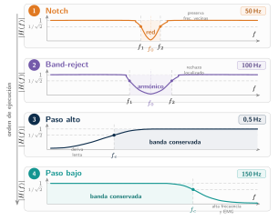
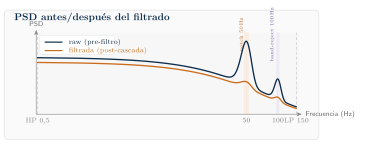
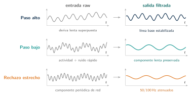
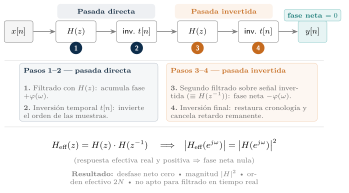
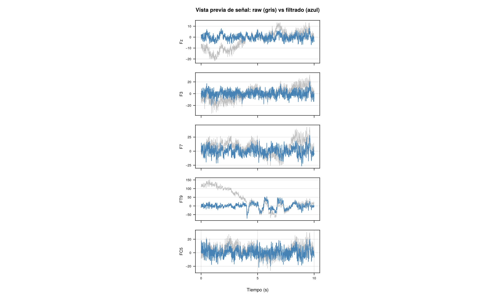

6 Filtrado
| Sección | Lectura | Estudio |
|---|---|---|
| Estrategia de filtrado | 21 min | 1 h |
| Butterworth: teoría y parámetros | 3 min | 35 min |
| Fase cero y doble pasada | 12 min | 50 min |
| Cascada NeuroMIND | 3 min | 5 min |
| Filtro high-pass | 1 min | 5 min |
| Filtro notch | 2 min | 10 min |
| Filtro band-reject | 1 min | 5 min |
| Filtro low-pass | 2 min | 10 min |
| Validación cruzada de la cascada con MNE-Python | 3 min | 5 min |
| Verificación de la respuesta y de la PSD | 7 min | 10 min |
| Contraste metodológico: filtrado en BrainVision Analyzer | 5 min | 20 min |
| Errores comunes y buenas prácticas | 2 min | 5 min |
| Anexo del capítulo: código y salidas | 4 min | 5 min |
| Síntesis y preguntas para discutir | 4 min | 25 min |
| Dudas del proyecto | 1 min | 5 min |
| Capítulo completo | 1 h 8 min | 3 h 40 min |
Objetivos de aprendizaje
Objetivo del capítulo. Un filtro mejora la relación señal-ruido y a la vez distorsiona la señal; NeuroMIND usa una cascada Butterworth —de fase cero (doble pasada) en el paso alto y el paso bajo, y causal (una pasada) en el notch y el band-reject, como se detalla en la Sección 6.4— y verifica su efecto en la respuesta y en la PSD.
Nota editorial sobre esta frase
El original resume la cascada como «de fase cero (doble pasada)» sin más. Eso es cierto solo para dos de sus cuatro etapas: el propio capítulo original (y el código, src/preprocessing/Filtering.jl) aplica el notch y el band-reject con filt, de una sola pasada y causales. La frase se ha matizado aquí para que no contradiga el desarrollo del capítulo. confirmado
La pregunta científica. Un filtro mejora la relación señal-ruido, pero también transforma la señal. Cuando después de filtrar medimos algo (una potencia, una fase, una conectividad), ¿cómo sabemos que estamos midiendo fisiología y no el propio filtro?
Al terminar este capítulo deberías ser capaz de:
- explicar qué hace un filtro digital como suma ponderada de muestras y por qué eso afecta a la forma de onda, no solo al espectro;
- distinguir un filtro causal de uno de fase cero, y explicar qué cambia en magnitud, fase y tiempo cuando se aplica
filtfilt; - leer una respuesta en frecuencia (frecuencia de corte, orden, −3 dB) y saber qué significa el orden de diseño frente al orden efectivo;
- describir la cascada de NeuroMIND (notch, band-reject, paso alto, paso bajo) con sus parámetros reales y por qué el orden de las etapas importa;
- decidir qué controles de calidad hacen falta para atribuir un cambio posterior a la fisiología y no a la cascada.
Conocimientos previos. Frecuencia de muestreo y frecuencia de Nyquist; idea de espectro de potencia (PSD) y de dominio de la frecuencia; números complejos básicos. Las secciones marcadas «Para clínicos» y «Para ingenieros» explican desde cada lado lo que el otro grupo suele dar por sabido.
Tres simulaciones docentes acompañan al capítulo: la Sección 6.3.1 (respuesta en frecuencia de un filtro), la Sección 6.11.1 (una señal sintética antes y después de filtrar) y la Sección 6.3.2 (filt frente a filtfilt: desplazamiento temporal, efecto de borde, escalón e impulso). Todas usan datos sintéticos; no son resultados de NeuroMIND.
Lecturas esenciales
Tres lecturas, de mayor a menor prioridad. La dificultad para ingeniería (de uno a tres, de menor a mayor) y los tiempos son los que da el informe original y son orientativos.
Pasa el cursor (o toca) sobre la cita para ver la referencia completa. Los tres niveles son los del informe: imprescindible, para profundizar y consulta.
Imprescindible
de Cheveigné y Nelken (2019) · «Filters: When, Why, and How (Not) to Use Them» (artículo, Neuron).
Cuándo, por qué y cómo (no) filtrar: efectos secundarios de los filtros explicados para neurocientíficos.
- Tiempo ≈ 2 h
- Dificultad 2
- Sección Sección 6.1.1
- DOI 10.1016/j.neuron.2019.02.039
Para profundizar
Widmann et al. (2015) · «Digital filter design for electrophysiological data – a practical approach» (artículo, Journal of Neuroscience Methods).
Diseño práctico de filtros FIR/IIR para datos electrofisiológicos: orden, banda de transición, distorsiones y cómo reportarlos.
- Tiempo ≈ 3 h
- Dificultad 3
- Sección Sección 6.1.3
- DOI 10.1016/j.jneumeth.2014.08.002
Consulta
Ruth y Neils (2020) · Biosignal processing: fundamentals for biomedical engineers (libro).
Fundamentos de procesado de bioseñales para ingenieros: muestreo, Fourier y filtrado digital y analógico.
- Tiempo a demanda
- Dificultad 1
- Sección Sección 6.2
- DOI sin DOI (libro; ISBN 9798688184860)
Genealogía de las ideas.
- 1930 · respuesta plana. Filtro de respuesta plana en la banda de paso (maximally flat) (Butterworth 1930).
- 2015 · guía práctica. Guía práctica de filtros en EEG (Widmann et al. 2015).
- 2019 · cuándo (no) filtrar. Cuándo (no) filtrar (de Cheveigné y Nelken 2019).
Contexto histórico añadido: cinco trabajos más
Cinco trabajos más sobre el filtrado de señales electrofisiológicas, cuya referencia se verificó por su DOI en Crossref el 22 de octubre de 2026. No se han leído los artículos completos para este libro: solo se resume su tema, tal como indica su título, y no se les atribuye ningún resultado cuantitativo.
- 1996 — Gustafsson (1996) trata cómo determinar los estados iniciales en el filtrado hacia delante y hacia atrás, el problema de los bordes que reaparece en la Sección 6.1.4.
- 2012 — Rousselet (2012) se pregunta si el filtrado impide estudiar el curso temporal de los potenciales evocados; Acunzo et al. (2012) estudia los sesgos sistemáticos que el filtrado paso alto produce en componentes tempranos de ERP y ERF.
- 2015 — Tanner et al. (2015) trata cómo filtros paso alto inadecuados pueden producir efectos artefactuales y conclusiones incorrectas en estudios de ERP; Winkler et al. (2015) estudia la influencia del filtrado paso alto en la reducción de artefactos basada en ICA, relevante para las preguntas abiertas del final del capítulo.
6.1 Estrategia de filtrado
Esta fase del pipeline toma la salida de la fase de datos brutos o raw (capítulo 4, «Diseño experimental y organización del pipeline», y capítulo 5, «Señal raw y control de calidad inicial»): es decir, señales EEG ya organizadas como matriz indexada por canal, con metadatos temporales y estadísticos opcionales de inspección inicial.
El objetivo es retirar ruido de la señal, como ruido de red, interferencias relacionadas con hardware y deriva lenta, además de limitar el ancho de banda antes de las etapas posteriores: ICA, segmentación, rechazo de épocas y análisis espectral (Iriarte Franco y Artieda González-Granda 2013; Sanei y Chambers 2022; Blinowska-Cieślak y Zygierewicz 2022).
Un filtro tiene un único propósito —mejorar la relación señal-ruido (SNR) aprovechando que señal y ruido ocupan regiones espectrales distintas— pero dos efectos inseparables: mejora la SNR y distorsiona la señal de interés (de Cheveigné y Nelken 2019). El primero es el que motiva el filtrado; el segundo es el que con más frecuencia queda sin documentar, y es el que este capítulo intenta hacer explícito.
Filtrar no significa «mejorar» la señal en abstracto: significa aplicar una transformación lineal que modifica de forma controlada la contribución de cada frecuencia y, con ello, la forma temporal de la señal. Antes de describir la cascada de NeuroMIND conviene fijar los conceptos que se usan en el resto del capítulo.
6.1.1 Qué es un filtro
En el lenguaje habitual, un filtro es «algo que modifica el contenido espectral de una señal». Esa definición es insuficiente para entender cómo afecta a los datos, porque omite la fase y oculta lo que ocurre en el tiempo. Una definición operativa más útil es la siguiente (de Cheveigné y Nelken 2019):
Un filtro digital es una operación que produce cada muestra de la salida y como una suma ponderada de varias muestras de la entrada x. Los pesos de esa suma, h[k], constituyen la respuesta al impulso del filtro y lo caracterizan por completo.
Para un filtro causal de longitud finita, la operación se escribe
y[n]=\sum_{k=0}^{N}h[k]\,x[n-k], \tag{6.1}
donde n es el instante de análisis y h[0],\dots,h[N] son los pesos. El nombre «respuesta al impulso» es literal: si la entrada es un impulso unitario \delta[n] (1 en n=0 y 0 en el resto), la salida es exactamente y[n]=h[n]. Del mismo modo, la respuesta al escalón es la suma acumulada \sum_{k\le n}h[k]; ambas son las formas más directas de visualizar qué hace un filtro en el tiempo.
Los filtros que se usan en preprocesamiento son lineales e invariantes en el tiempo (LTI). Lineal significa que se cumple el principio de superposición: filtrar a\,x_1+b\,x_2 da el mismo resultado que combinar a veces la salida de x_1 con b veces la de x_2. Invariante en el tiempo significa que los pesos h[k] no cambian a lo largo del registro: retrasar la entrada solo retrasa la salida.
Mostrar la explicación
Es la propia respuesta al impulso h[n]: con x=\delta solo sobrevive el término k=n de la suma de la ecuación 6.1. Como el filtro es lineal e invariante en el tiempo, cualquier señal es una suma de impulsos desplazados y escalados, y por tanto la salida es la suma de copias desplazadas y escaladas de h[n]. Conocer h[n] equivale a conocer el filtro entero: de ahí que la bibliografía recomiende documentar la respuesta al impulso o al escalón (de Cheveigné y Nelken 2019).
La idea de la convolución
La suma ponderada anterior es una convolución que, en su forma general, sin restringir el rango de k, se escribe
y[n]=(h*x)[n]=\sum_{k=-\infty}^{\infty}h[k]\,x[n-k]. \tag{6.2}
Operativamente, se invierte h en el tiempo, se desliza sobre la señal y, en cada posición n, se multiplican muestra a muestra las dos secuencias solapadas y se suman los productos. La operación admite dos lecturas equivalentes. Desde la salida, cada muestra y[n] combina muchas muestras de entrada; desde la entrada, cada muestra x[n] se «reparte» sobre muchas muestras de salida, con los pesos de h. En consecuencia, el filtrado emborrona el eje temporal: un evento breve se ensancha, las relaciones temporales entre eventos se difuminan y pueden aparecer en la salida rasgos —oscilaciones, deflexiones de signo opuesto— que no existían en la entrada.
El ejemplo más simple es la media móvil de L muestras, h[k]=1/L para k=0,\dots,L-1: cada salida es el promedio de las L últimas entradas, lo que suaviza la señal y actúa como paso bajo. Su respuesta en frecuencia se anula en los múltiplos de F_s/L; con F_s=500 Hz y L=10 (20 ms), esos ceros caen exactamente en 50, 100, 150 Hz… y la media móvil cancela la red y todos sus armónicos, a costa de atenuar también la banda gamma.
Pregunta de comprensión Con esa misma media móvil (Fs = 500 Hz, L = 10), ¿qué ganancia tiene una sinusoide de 25 Hz? ¿Y por qué se dice que «atenúa también la banda gamma»?
La respuesta en magnitud de una media móvil de L muestras es
|H(f)|=\frac{\left|\sin\!\left(\pi f L/F_s\right)\right|}{L\,\left|\sin\!\left(\pi f/F_s\right)\right|}.
Para f=25 Hz: \sin(\pi\cdot25\cdot10/500)=\sin(\pi/2)=1 y L\sin(\pi\cdot25/500)=10\sin(\pi/20)\approx1{,}564, de modo que |H(25\ \mathrm{Hz})|\approx0{,}639 (unos −3,9 dB): la amplitud de esa componente queda en torno al 64 %. Hacia 30–50 Hz, donde se sitúa la banda gamma, la ganancia sigue cayendo hasta anularse en 50 Hz, de modo que la media móvil elimina la red pero también deprime la gamma: es el compromiso que el capítulo usa más adelante para descartarla como alternativa (Sección 6.1.7). Obsérvese además que el cálculo habla de ganancia (|H|): la media móvil causal introduce también un retardo que este cálculo no recoge.
La misma operación en frecuencia
Por el teorema de convolución, en el dominio de la frecuencia la convolución se convierte en un producto:
\begin{aligned} Y(e^{j\omega}) &= H(e^{j\omega})X(e^{j\omega}),\\ H(e^{j\omega}) &=\sum_{k}h[k]\,e^{-j\omega k} =|H(e^{j\omega})|\,e^{j\varphi(\omega)}, \end{aligned} \tag{6.3}
con \omega=2\pi f/F_s. H es la función de transferencia: una sinusoide de frecuencia f atraviesa el filtro sin cambiar de frecuencia, pero multiplicada por la ganancia |H| y desplazada por la fase \varphi. El retardo de grupo \tau_g(\omega)=-\mathrm{d}\varphi/\mathrm{d}\omega (en muestras) indica cuánto se retrasa cada componente. Si \tau_g es constante (fase lineal), todas las frecuencias se retrasan lo mismo y la forma de onda se conserva desplazada; si no lo es, las componentes se desalinean entre sí y la forma de onda se deforma. Una descripción en frecuencia que solo muestre |H| está, por tanto, incompleta. Cualquier análisis posterior sobre datos filtrados hereda las ganancias, atenuaciones y efectos de fase de H; por eso la respuesta del filtro debe documentarse.
Por linealidad, filtrar la suma de señal s y ruido r equivale a sumar ambos componentes filtrados,
h*(s+r) = h*s + h*r, \tag{6.4}
de modo que los dos efectos pueden estudiarse por separado: cuánto se atenúa el ruido y cuánto se deforma la señal. Esta propiedad justifica evaluar una cascada con entradas conocidas (impulso, escalón u oscilación sintética) antes de atribuir a la fisiología un cambio observado en datos reales.
Piense en un filtro como en una regla de promedio móvil con pesos: cada punto del trazado filtrado es una mezcla de puntos vecinos. Por eso un filtro no puede «quitar» solo lo que no interesa: lo que hace es mezclar muestras, y esa mezcla cambia tanto el contenido de frecuencias como la forma de los eventos breves.
En EEG de reposo la señal de interés no es un evento con latencia sino una superposición de actividad oscilatoria de banda ancha con espectro tipo 1/f aproximado. Lo que importa de H no es solo |H| sino también cuánto desplaza la fase relativa entre canales (de ello depende la conectividad por fase) y qué transitorios genera en los extremos y ante artefactos.
6.1.2 Filtros causales y no causales
Un filtro es causal si h[k]=0 para todo k<0: la salida en el instante n depende solo de la muestra presente y de las pasadas, x[n],x[n-1],x[n-2],\dots Es el único tipo físicamente realizable en tiempo real, porque el futuro no puede influir en el presente: son causales los filtros analógicos del amplificador, el filtro antialiasing previo a la conversión analógico-digital y cualquier filtrado online (por ejemplo, en una BCI). Su contrapartida es que la respuesta siempre llega después del evento que la provoca: todo filtro causal introduce retardo.
Un filtro es no causal (o acausal) si h[k]\neq0 para algún k<0. La suma se extiende entonces a muestras futuras,
y[n]=\sum_{k=-N'}^{N}h[k]\,x[n-k], \tag{6.5}
de modo que y[n] depende también de x[n+1],\dots,x[n+N']. Un filtro así no puede funcionar en tiempo real, pero es trivial de aplicar offline, donde todo el registro está disponible. Su contrapartida es que parte de la respuesta precede al evento: un transitorio puede generar oscilaciones antes de producirse (pre-ringing), y el orden temporal entre eventos filtrados puede confundirse. Esto importa cuando se infieren latencias o relaciones causales; en EEG de reposo el riesgo principal es que un artefacto contamine también las muestras anteriores a él.
Dos casos merecen mención. En un IIR causal, la salida depende de todas las muestras desde el inicio del registro, y el filtro trata lo anterior como ceros; si es acausal, depende también de todas las muestras hasta el final. Y el filtrado en el dominio de Fourier (multiplicar la FFT por una máscara) es acausal por construcción: cada muestra de salida depende de todas las muestras de la ventana transformada. En NeuroMIND conviven ambos tipos: notch y band-reject son causales (filt); paso alto y paso bajo son no causales (filtfilt).
6.1.3 Filtros FIR e IIR
Los filtros digitales se dividen en dos grandes familias según la duración de su respuesta al impulso.
FIR (Finite Impulse Response). Filtros no recursivos: la salida es una combinación de muestras de entrada únicamente,
y[n]=\sum_{k=0}^{M}b_k\,x[n-k]. \tag{6.6}
Los coeficientes b_k son directamente la respuesta al impulso, que termina tras M+1 muestras. Al no tener realimentación, un FIR es siempre estable. Si sus coeficientes son simétricos (b_k=b_{M-k}), tiene fase lineal: \varphi(\omega)=-\omega M/2, un retardo idéntico de M/2 muestras para todas las frecuencias que no deforma la forma de onda y que puede compensarse desplazando la salida. Su coste es la longitud: la anchura de la transición entre banda de paso y de rechazo es inversamente proporcional a M, de modo que cortes abruptos o muy bajos (como 0,5 Hz a F_s=500 Hz) exigen cientos o miles de coeficientes.
IIR (Infinite Impulse Response). Filtros recursivos: la salida depende de muestras pasadas de la entrada y de la propia salida,
\begin{aligned} y[n]&=\sum_{k=0}^{M}b_k\,x[n-k]-\sum_{k=1}^{N}a_k\,y[n-k],\\ H(z)&=\frac{\sum_{k=0}^{M}b_kz^{-k}}{1+\sum_{k=1}^{N}a_kz^{-k}}. \end{aligned} \tag{6.7}
La realimentación hace que la respuesta al impulso sea infinita: decae, pero nunca se anula exactamente. Con muy pocos coeficientes se consiguen pendientes pronunciadas, y suelen derivarse de prototipos analógicos clásicos (Butterworth, Chebyshev, elíptico, Bessel) mediante la transformación bilineal (Sección 6.2). A cambio, un IIR causal tiene en general fase no lineal, su estabilidad depende de que los polos de H(z) queden dentro del círculo unidad, y con cortes muy bajos respecto a F_s o con órdenes altos es sensible a errores numéricos; por eso se implementa como cascada de secciones de segundo orden (biquads), que es lo que hace DSP.jl al aplicar los filtros de NeuroMIND.
El término orden no significa lo mismo en ambas familias. En un FIR es la longitud de la respuesta al impulso menos uno (típicamente entre 100 y 1000); en un IIR es el mayor retardo de la ecuación en diferencias (típicamente entre 2 y 16). Por eso, al documentar un filtro, el orden solo es interpretable junto con la familia, y si un IIR se aproxima mediante un FIR deben declararse ambos.
Todos los filtros de este pipeline son Butterworth IIR. La elección es conservadora: respuesta de magnitud plana en la banda de paso, pocos parámetros, implementación eficiente y comportamiento estándar en preprocesamiento EEG.
En NeuroMIND el parámetro filter_order = 4 es el orden del prototipo analógico paso bajo con el que DSP.jl diseña cada filtro. El orden de la función de transferencia digital resultante depende del tipo: 4 polos (2 biquads) en el paso alto y el paso bajo, pero 8 polos (4 biquads) en el notch y el band-reject, porque la transformación de paso bajo a banda eliminada duplica el número de polos. Se comprobó con DSP.jl 0.8.5 para las cuatro etapas de la cascada. confirmado
Esto es distinto del «orden efectivo 8» del paso alto y el paso bajo, que surge de aplicarlos con filtfilt (Sección 6.3). Cuando se cita «orden 4» o «orden 8» conviene decir siempre a qué se refiere: diseño del prototipo, polos de una pasada o pendiente efectiva tras filtfilt.
6.1.4 Filtros de fase cero y filtfilt
Un filtro es de fase cero si \varphi(\omega)=0 para toda frecuencia, es decir, si H(e^{j\omega}) es real. En el tiempo esto equivale a una respuesta al impulso simétrica respecto al origen, h[-k]=h[k]. Un filtro de fase cero no retrasa ninguna componente: los picos y transiciones permanecen en su posición. Pero, salvo el caso trivial h=\delta, es necesariamente no causal, porque su respuesta se extiende por igual hacia el pasado y hacia el futuro.
Todo filtro ordinario retrasa la señal: un pico sale un poco más tarde de lo que ocurrió. Un filtro de fase cero no retrasa ninguna componente, y los picos y las transiciones quedan en su sitio. Se consigue filtrando dos veces, hacia delante y hacia atrás (filtfilt); como usa muestras pasadas y futuras, solo puede aplicarse sobre el registro ya grabado, no en tiempo real, que es justo el caso de NeuroMIND.
La forma habitual de construir un filtro de fase cero a partir de cualquier filtro causal h, FIR o IIR, es la doble pasada, implementada en MATLAB, SciPy y DSP.jl como filtfilt:
- se filtra la señal hacia delante: u=h*x;
- se invierte u en el tiempo;
- se filtra de nuevo con el mismo h;
- se invierte el resultado para devolverlo a su orden original.
El conjunto equivale a un único filtro con respuesta al impulso
h_{\mathrm{eff}}[k]=(h*\tilde h)[k], \qquad \tilde h[k]=h[-k], \tag{6.8}
la autocorrelación de h, que es simétrica por construcción y, por tanto, de fase cero. En frecuencia, H_{\mathrm{eff}}=|H|^2 (Sección 6.3). De aquí se siguen cuatro consecuencias prácticas:
- La atenuación en dB se duplica. En la frecuencia de corte de diseño, los −3,01 dB de un Butterworth pasan a ser −6,02 dB. El paso alto de 0,5 Hz de NeuroMIND deja, por tanto, la mitad de amplitud (no de potencia) a 0,5 Hz.
- La pendiente se duplica. Un diseño de orden N cae asintóticamente como uno de orden 2N; de ahí el «orden efectivo 8» de las etapas con N=4. No es, sin embargo, un Butterworth de orden 2N: la forma de |H|^2 cerca del corte es distinta.
- La respuesta al impulso se alarga y se hace bilateral. h_{\mathrm{eff}} dura aproximadamente el doble que h, y el ringing aparece antes y después de cada evento.
- Los bordes necesitan tratamiento. Al principio y al final no hay muestras con las que completar la suma.
DSP.jlprolonga la señal por ambos extremos con una extensión de simetría impar y elige el estado inicial del filtro como si la entrada llevara tiempo en régimen estacionario. En los filtros de NeuroMIND esa extensión es corta (6\times el número de biquads: 12 muestras, 24 ms, para un Butterworth de orden 4) frente a la escala temporal de un paso alto de 0,5 Hz, por lo que los primeros y últimos segundos pueden conservar transitorios.
Una alternativa con una sola pasada es un FIR simétrico cuya salida se desplaza M/2 muestras: también tiene fase cero, sin elevar la magnitud al cuadrado. En ambos casos el filtro solo es aplicable offline.
Resumen de tipos. Causal: solo pasado, retardo, tiempo real. No causal: pasado y futuro, sin retardo necesario, solo offline. FIR: respuesta finita, estable, fase lineal fácil. IIR: respuesta infinita, eficiente, fase no lineal. Fase cero: h simétrica, sin retardo, siempre no causal; filtfilt la obtiene con doble pasada.
Para filtros dados como cascada de biquads (el caso de NeuroMIND), filtfilt usa un relleno de \min(6\cdot n_{\text{biquads}},\,N-1) muestras por cada extremo, con extensión de simetría impar (2·x[1] − x[…]) y estado inicial estacionario escalado por la primera muestra de la señal extendida. Esto coincide con lo descrito arriba. confirmado El procedimiento general del problema de los estados iniciales en el filtrado hacia delante y hacia atrás se trata en Gustafsson (1996); no se afirma que DSP.jl implemente exactamente el método de ese artículo.
6.1.5 Compromiso entre tiempo y frecuencia
La frecuencia de corte no caracteriza por sí sola un filtro: dos filtros con el mismo f_c pueden tener respuestas al impulso y al escalón muy distintas. Dos propiedades de esa respuesta determinan cómo afecta el filtro a los datos.
Pendiente frente a duración. Cuanto más abrupta es la transición en frecuencia, más larga es la respuesta al impulso y más pronunciado el ringing, la oscilación que el filtro produce ante una entrada breve. El ringing aparece en torno a la frecuencia de corte y crece con el orden y con la estrechez de la banda; los paso banda y los rechazos estrechos son los casos más expuestos. Un notch de 1 Hz de ancho, como el de NeuroMIND, tiene necesariamente una respuesta al impulso extensa.
Fase. Muchas respuestas al impulso distintas comparten la misma magnitud |H| y difieren solo en la fase. Entre ellas destacan la de fase mínima (causal, con retardo y mayor deformación de la forma de onda) y la de fase cero (sin retardo, pero acausal: parte de la respuesta precede al evento que la provoca). Ninguna elección elimina la distorsión temporal; solo decide cómo se reparte entre retardo, forma de onda y causalidad.
La consecuencia más engañosa es la aparición de oscilaciones espurias: una entrada no oscilatoria (un impulso, un escalón, un parpadeo) puede producir a la salida de un paso banda una oscilación convincente a la frecuencia del filtro. Un paso banda de 8–11 Hz convierte un par de impulsos aislados en una traza difícil de distinguir de un brote alfa. Esta advertencia afecta poco a la cascada de este capítulo, cuyos cortes (0,5 y 150 Hz) quedan lejos de las bandas de interés, pero sí al filtrado paso banda por banda del estimador Hilbert de wPLI (cap. 13, «Conectividad funcional», del informe original).
Una transición abrupta en frecuencia implica una respuesta extendida en el tiempo. Cuando el objetivo no exige separar bandas con precisión (y no existe una frontera fisiológica nítida entre, por ejemplo, delta y theta), suele compensar relajar el criterio espectral para mejorar el comportamiento temporal.
Pregunta de comprensión ¿Puede un filtro introducir oscilaciones alrededor de un transitorio? ¿Antes, después o ambas?
Sí. Un filtro no sabe qué parte de la señal es «el evento»: responde a la entrada con su respuesta al impulso, y esta tiene estructura oscilatoria alrededor de la frecuencia de corte (ringing) que crece con el orden y con la estrechez de la banda. Si el filtro es causal, las oscilaciones aparecen solo después del transitorio. Si es de fase cero (filtfilt), la respuesta efectiva h_{\mathrm{eff}} es simétrica, de modo que el ringing aparece antes y después. La consecuencia práctica es que, en un registro filtrado, una oscilación cercana a un artefacto brusco puede ser efecto del filtro y no fisiología. interpretación El impulso de la Sección 6.11.1 permite ver este efecto con datos sintéticos.
6.1.6 Vista global de la cascada
La cascada de NeuroMIND combina cuatro filtros Butterworth IIR, dos causales y dos de fase cero (Sección 6.4). Antes de detallar cada etapa, las figuras siguientes resumen su efecto conjunto en frecuencia y en tiempo.
Filtrado y control de calidad. Un filtro no sabe qué parte es cerebro y qué parte es ruido: solo «ve» frecuencia, fase y amplitud. Por eso conviene combinar filtrado con QC, ICA y rechazo de épocas, no usarlo como solución única.

assets/MANIFEST.tsv).
La respuesta en magnitud de la figura 6.1 predice qué le ocurre a la densidad espectral de potencia de la señal al atravesar la cascada: el notch de 50 Hz y el band-reject de 100 Hz deben verse como muescas en el espectro filtrado.

Este esquema supone una señal cruda con un pico de red en 50 Hz. En los datos reales de sub-M05 (figura de la PSD) la señal cruda ya presenta un valle en 50 Hz, atribuido en el informe original a un notch online del amplificador. Es decir, la figura esquemática ilustra el efecto de la etapa de notch del pipeline, pero la figura real no puede mostrarlo en 50 Hz, porque la curva cruda y la filtrada coinciden allí. observado provisional
La misma operación puede leerse en el dominio temporal. La figura 6.3 muestra, inmediatamente después, qué componente se atenúa en cada caso y cuál permanece en la salida. Las trazas son didácticas: no representan un mismo segmento procesado sucesivamente ni sustituyen la verificación con datos reales.

6.1.7 Implicaciones para NeuroMIND
El EEG en reposo no tiene latencias ni eventos que alinear, de modo que buena parte de los riesgos descritos para potenciales evocados (picos desplazados, componentes espurios con latencias verosímiles, inferencias causales erróneas) no se aplican directamente. Los que sí se aplican, y la decisión que toma el pipeline en cada caso, son los siguientes.
Filtrar antes de segmentar. Filtrar la señal continua evita los transitorios de borde que aparecerían en cada época; en particular, un notch aplicado sobre épocas cortas suprime mal la interferencia cerca de sus extremos. NeuroMIND filtra el registro continuo (paso 3) y segmenta después de ICA (paso 5). La contrapartida es que la respuesta del filtro a un artefacto situado fuera de una época —un parpadeo, un salto de electrodo— puede extenderse dentro de ella; con filtfilt, tanto desde antes como desde después del artefacto. ICA y el rechazo por amplitud (\pm70\,\muV) actúan sobre ese residuo.
Transitorio inicial. Un filtro recursivo trata la señal como si estuviera precedida de ceros; si el primer tramo del registro tiene un offset grande, el filtro ve un escalón implícito. En la cascada actual, notch y band-reject se aplican con filt causal sin restar antes la media del tramo inicial.
Falta representar la respuesta al impulso y al escalón de la cascada real (F_s=500 Hz, notch y band-reject con filt, paso alto y paso bajo con filtfilt) y cuantificar el transitorio inicial del notch causal sobre los primeros segundos del registro. pendiente
La Sección 6.11.1 ilustra el fenómeno con una señal sintética que incluye un desplazamiento continuo, pero no lo cuantifica sobre registros reales, de modo que el pendiente sigue abierto.
Pérdida de información. Lo que cae en la banda de rechazo se pierde. El paso alto de 0,5 Hz elimina la actividad infralenta (fuera del objetivo del estudio) y coincide con el límite inferior de la banda delta, que ya está marcada como poco fiable para wPLI. El notch de 49,5–50,5 Hz coincide con el límite superior de la banda gamma (30–50 Hz), por lo que el extremo superior de gamma debe interpretarse con cautela. El paso bajo de 150 Hz no afecta a ninguna banda analizada.
Fase y conectividad. La cadena aplica exactamente el mismo filtro LTI a todos los canales. Para cualquier par de canales, el espectro cruzado filtrado es H S_{xy} H^{*} = |H|^{2}S_{xy}: a cada frecuencia cambia el peso, pero no la fase relativa entre canales. En principio, el desfase del notch causal, común a todos los canales, no altera el signo de \operatorname{Im}(S_{xy}) en el que se basa el wPLI.
La invariancia de fase relativa (|H|^2S_{xy}) es una deducción teórica, no una verificación empírica. No cubre los transitorios de borde ni el cambio de ponderación entre frecuencias dentro de una banda ancha. hipótesis pendiente
Documentación completa. Tipo, orden, cortes y número de pasadas (filt o filtfilt) de cada etapa se recogen en la tabla 6.4. La recomendación de la literatura va más allá: acompañar la especificación con la respuesta al impulso o al escalón de la cascada completa (de Cheveigné y Nelken 2019).
Alternativas al filtrado. Existen opciones con menos distorsión temporal: detrending (robusto) en lugar de paso alto, o regresión y descomposición espacial (por ejemplo, ICA) para eliminar la interferencia de red. Un suavizado rectangular de 1/50 s anula 50 Hz y todos sus armónicos, pero no es aplicable aquí porque atenúa la banda gamma. NeuroMIND mantiene la cascada Butterworth para reproducir EEG_Julia y ser comparable con la práctica establecida, documentando sus efectos en lugar de omitirlos.
Control de sensibilidad. Un efecto que solo aparece con un filtro o estimador concreto debe tratarse como sospechoso. NeuroMIND ofrece tres estimadores de wPLI: Hilbert, que usa paso banda Butterworth por banda, y FourierCSD y multitaper, que no filtran por banda. Reproducir un hallazgo con un estimador sin paso banda es un control natural frente al ringing.
Pregunta de comprensión ¿Por qué se filtra antes de segmentar y no después?
Porque el filtro necesita contexto temporal. Si se aplicara a cada época de 1 s por separado, cada una tendría sus propios bordes: un IIR no tiene muestras previas con las que «arrancar» y un notch estrecho (de 1 Hz de ancho, con respuesta al impulso muy larga) suprimiría mal la interferencia cerca de los extremos de la época. Al filtrar el registro continuo, esos transitorios caen una sola vez en el principio y el final del registro, no en cada época. El coste, descrito arriba, es que la respuesta a un artefacto situado fuera de una época puede extenderse dentro de ella; por eso ICA y el rechazo por amplitud actúan después.
Pregunta de comprensión ¿Qué información se pierde al eliminar una banda?
Toda la que estaba solo en esa banda: un filtro lineal no puede devolver lo que ha atenuado hasta casi cero (en el centro del notch la ganancia es del orden de 10^{-10} para el diseño de NeuroMIND). No es solo «el ruido de 50 Hz»: también se pierde cualquier actividad fisiológica en 49,5–50,5 Hz, lo que importa porque el extremo superior de gamma (30–50 Hz) coincide con esa banda. El paso alto de 0,5 Hz elimina la actividad infralenta (fuera del objetivo del estudio) y comparte frontera con delta; el paso bajo de 150 Hz no toca ninguna banda analizada. Además de lo que se pierde por completo, hay una zona de transición donde la información queda atenuada y deformada (por ejemplo, ponderada de forma desigual dentro de una banda ancha). confirmado para la ganancia del notch con DSP.jl; interpretación para el impacto fisiológico.
6.2 Butterworth: teoría y parámetros
Un filtro Butterworth se caracteriza por tener una respuesta maximally flat: no introduce ondulaciones en la banda de paso (Butterworth 1930). Para un prototipo analógico paso bajo de orden N:
|H_{\mathrm{LP}}(j\omega)|^2 = \frac{1}{1+\left(\frac{\omega}{\omega_c}\right)^{2N}}. \tag{6.9}
El paso alto se obtiene por transformación de frecuencia:
|H_{\mathrm{HP}}(j\omega)|^2 = \frac{1}{1+\left(\frac{\omega_c}{\omega}\right)^{2N}}. \tag{6.10}
En ambos casos, en la frecuencia de corte se cumple
|H(j\omega_c)|=\frac{1}{\sqrt{2}}, \qquad 20\log_{10}|H(j\omega_c)|\approx -3{,}01\,\mathrm{dB}. \tag{6.11}
Así, f_c no es una frontera absoluta, sino el punto donde la potencia queda reducida a la mitad.
Orden del filtro. La pendiente asintótica de un Butterworth es 20N dB/década (6N dB/octava). Subir N hace el corte más abrupto, pero también puede aumentar ringing y sensibilidad numérica.
Los polos del prototipo Butterworth se distribuyen de forma uniforme sobre un semicírculo del semiplano izquierdo:
p_k=\omega_c \exp\!\left[ j\left(\frac{\pi}{2}+\frac{(2k-1)\pi}{2N}\right) \right], \qquad k=1,\dots,N. \tag{6.12}
En implementación digital, el diseño analógico suele mapearse al plano z mediante la transformación bilineal:
s=\frac{2F_s(1-z^{-1})}{1+z^{-1}}, \tag{6.13}
con posible prewarping de frecuencias para que el corte digital coincida con el deseado.

Detalle técnico: la fórmula del filtro digital que usa NeuroMIND (y la Simulación A)
Con la transformación bilineal y el prewarping de la frecuencia de corte, la magnitud al cuadrado del filtro digital tiene una forma cerrada exacta. Con \Omega=\tan(\omega/2), \omega=2\pi f/F_s y \Omega_c=\tan(\pi f_c/F_s):
|H_{\mathrm{LP}}|^2=\frac{1}{1+\left(\Omega/\Omega_c\right)^{2N}},\qquad |H_{\mathrm{HP}}|^2=\frac{1}{1+\left(\Omega_c/\Omega\right)^{2N}},
y para una banda eliminada de bordes f_1<f_2, con \Omega_i=\tan(\pi f_i/F_s), B=\Omega_2-\Omega_1 y \Omega_0^2=\Omega_1\Omega_2,
|H_{\mathrm{BS}}|^2=\frac{1}{1+\left(\dfrac{B\,\Omega}{\Omega_0^2-\Omega^2}\right)^{2N}}.
Son las ecuaciones 6.9 y 6.10 con la frecuencia deformada por la tangente. Esa deformación hace que el corte digital caiga exactamente en f_c y que, cerca de la frecuencia de Nyquist, la respuesta se comprima.
Comprobación numérica. La Simulación A usa estas expresiones (con la fase del prototipo) y se comparó con freqresp de DSP.jl 0.8.5 en 106 diseños y 9 845 puntos de frecuencia (tests/verificar.mjs). La diferencia máxima de la respuesta compleja es de 3,4·10⁻⁹ en el paso alto y 6,5·10⁻⁹ en el paso bajo; en el band-reject llega a 4,8·10⁻⁷ en el caso más exigente probado (orden 8 y 1 Hz de ancho). Son diferencias de redondeo de los coeficientes en coma flotante, compatibles con el peor condicionamiento de las bandas estrechas de orden alto. confirmado
Pregunta de comprensión ¿Qué significa realmente una frecuencia de corte de 0,5 Hz? ¿Se elimina todo lo que esté por debajo?
No. La frecuencia de corte de un Butterworth es el punto donde la ganancia en amplitud vale 1/\sqrt{2}\approx0{,}707 (−3,01 dB), es decir, donde la potencia se reduce a la mitad (ecuación 6.11). Por debajo de f_c las componentes no desaparecen: se atenúan progresivamente, con una pendiente asintótica de 20N dB por década para una pasada. Por encima de f_c, en un paso alto, tampoco pasan «intactas»: la ganancia se acerca a 1 solo de forma gradual.
Con filtfilt el punto de −3 dB deja de ser el de corte: a 0,5 Hz el paso alto de NeuroMIND (orden de diseño 4) deja la mitad de la amplitud (−6,02 dB), y la ganancia de −3,01 dB se alcanza algo más arriba, en torno a 0,558 Hz. Por eso «corte a 0,5 Hz» solo es una descripción completa si se dice también el orden y si se aplicó una o dos pasadas. confirmado (verificado con DSP.jl: −3,0103 dB en una pasada y −6,0206 dB en doble pasada).
6.3 Fase cero y doble pasada
Un IIR causal tiene, en general, fase no lineal: distintos componentes frecuenciales se retrasan de forma distinta. Esto es problemático cuando se interpretan latencias, picos ERP, alineación temporal de eventos o relaciones de fase. Para evitarlo, las etapas finales de la cascada se aplican con filtfilt: una pasada hacia delante y otra hacia atrás.
\begin{aligned} y &= \mathrm{filtfilt}(b,a,x),\\ H_{\mathrm{eff}}(e^{j\omega}) &= H(e^{j\omega})H(e^{-j\omega}) = |H(e^{j\omega})|^2. \end{aligned} \tag{6.14}
El resultado tiene fase neta cero y magnitud al cuadrado. En la práctica esto duplica el orden efectivo: un Butterworth de diseño N=4 se comporta como una respuesta de octavo orden en magnitud tras filtfilt (asintóticamente; véase la precisión de la Sección 6.1.4: no es un Butterworth de orden 8).

filtfilt cancela el desfase temporal al aplicar el mismo filtro hacia delante y hacia atrás. Figura TikZ propia del informe original.
filtfilt y tiempo real. filtfilt usa muestras futuras: es ideal para post-procesamiento, pero no para aplicaciones online o BCI en tiempo real.
Pregunta de comprensión ¿Por qué filtfilt elimina el desfase pero modifica la respuesta de magnitud?
Porque la segunda pasada, hecha sobre la señal invertida en el tiempo, aplica el filtro con la fase cambiada de signo. Si en la primera pasada una componente de frecuencia \omega sufre |H|e^{j\varphi}, en la segunda sufre |H|e^{-j\varphi}; el producto es |H|^2, real y positivo: el desfase se cancela por completo. Pero las magnitudes no se cancelan, se multiplican: la atenuación en dB se duplica (−3,01 dB en f_c pasa a −6,02 dB) y la pendiente asintótica también. Es lo que dice la ecuación 6.14. La «fase cero» no es gratis: se paga con magnitud al cuadrado, con una respuesta al impulso bilateral (ringing antes y después del evento) y con la imposibilidad de usarlo en tiempo real. confirmado
6.3.1 Simulación A · Respuesta en frecuencia de un filtro
Esta simulación dibuja la respuesta en magnitud (y la fase de una sola pasada) de un Butterworth digital con la misma fórmula y construcción que usa DSP.jl en el pipeline: puedes cambiar el tipo, la frecuencia de corte, el orden y la frecuencia de muestreo, y ver cuánto cambia al aplicarlo en una pasada (filt) o en doble pasada (filtfilt).
Pregunta guía: si dejas el corte en 0,5 Hz y pasas de una pasada a doble pasada, ¿qué ocurre con la atenuación justo en 0,5 Hz? ¿Y con la fase?
Supuestos y diferencias con el pipeline real
- Respuesta ideal. Se dibuja la respuesta de un filtro aplicado a un registro infinito. Un registro finito añade efectos de borde que esta simulación no muestra (véase la Simulación B).
- Fórmula, no ajuste. Las curvas son la respuesta exacta del Butterworth digital (bilineal con prewarping), comprobada contra
freqrespdeDSP.jl0.8.5; no son curvas dibujadas a mano. - Un solo canal, sin datos. No hay señal, QC, ICA ni canales. La cascada real de NeuroMIND encadena cuatro filtros; aquí se muestra uno cada vez.
- Escalas. Eje de frecuencias logarítmico, de 0,01 Hz a Nyquist. La magnitud se recorta en −120 dB (el centro exacto de un notch de 1 Hz llega a ≈ −189 dB). La escala vertical es la misma en todos los casos.
- Parámetros del pipeline (para reproducirlos): paso alto 0,5 Hz, orden 4,
filtfilt; paso bajo 150 Hz, orden 4,filtfilt; notch 49,5–50,5 Hz (centro 50, ancho 1) y band-reject 99,5–100,5 Hz (centro 100, ancho 1), orden 4,filt; Fs = 500 Hz. - Esta simulación no modifica nada: no lee ni escribe
config/pipeline.tomlni ejecuta análisis EEG.
- Con paso alto, f_c=0{,}5 Hz y N=4: ¿cuánto vale la atenuación en 0,5 Hz con una pasada y con doble pasada? ¿Y la fase con cada una?
- Sube N de 4 a 8 manteniendo f_c: ¿qué cambia en el punto de −3 dB y qué cambia lejos del corte?
- Pon F_s=250 Hz y mueve f_c hacia el máximo del deslizador: ¿qué le pasa a la forma de la curva cerca de Nyquist?
- Con banda eliminada, centro 50 Hz y ancho 1 Hz: ¿cuántos dB de atenuación hay en 50 Hz? ¿Qué ocurre si estrechas la banda?
Qué deberías ver (valores comprobables)
- −3,01 dB con una pasada y −6,02 dB con doble pasada; fase: ±180° con una pasada (en el corte, un paso alto de orden 4 acumula 4\times45^\circ respecto al prototipo) y 0° con doble pasada. La tabla 6.1 recoge más valores.
- El punto de −3 dB sigue en f_c para una pasada. Lejos del corte la pendiente es el doble de empinada con N=8 (20N dB/década por pasada).
- La respuesta se comprime hacia Nyquist por la deformación de la tangente del prewarping; sigue pasando por −3,01 dB en f_c.
- Del orden de −189 dB en el centro exacto (la simulación recorta la curva en −120 dB, de modo que verás una muesca profunda y plana); al estrechar la banda, la muesca se estrecha y los bordes de −3 dB siguen en f_0\pm B/2.
interactive/filtrado/filtros.js), que coincide con freqresp de DSP.jl a ≤ 3,4·10⁻⁹. Los valores de 0 dB son redondeos a dos decimales.
| f (Hz) | Una pasada: ganancia (dB) | Una pasada: fase | Doble pasada: ganancia (dB) | Doble pasada: fase |
|---|---|---|---|---|
| 0,1 | −55,92 | −30,1° | −111,84 | 0° |
| 0,25 | −24,10 | −78,0° | −48,20 | 0° |
| 0,5 (f_c) | −3,01 | ±180° | −6,02 | 0° |
| 1 | −0,02 | 78,0° | −0,03 | 0° |
| 2 | 0,00 | 37,8° | 0,00 | 0° |
| 5 | 0,00 | 15,0° | 0,00 | 0° |
6.3.2 Simulación C · filt frente a filtfilt: retardo, bordes, escalón e impulso
Objetivo científico. La Sección 6.3 afirma que filtfilt «no retrasa» la señal y que la doble pasada «duplica el orden». Esta simulación permite comprobarlo en el dominio del tiempo con una señal sintética: cuánto se desplaza la salida de una sola pasada (filt, causal) y por qué ese desplazamiento depende de la frecuencia; qué ocurre al principio y al final de un registro finito (efecto de borde y transitorio inicial); cómo cambian el orden y la frecuencia de corte; y qué aspecto tienen la respuesta al escalón y al impulso de cada método. La simulación no usa datos EEG: el filtro es un Butterworth del tipo y el orden del pipeline (paso alto de 0,5 Hz o paso bajo de 150 Hz, orden de diseño 4, F_s=500 Hz).
Ecuaciones. Con una pasada, la salida es y=h*x y el filtro tiene respuesta H(e^{j\omega})=|H|e^{j\varphi(\omega)}. Dos magnitudes describen su efecto en el tiempo:
\tau_g(\omega)=-\frac{d\varphi}{d\omega}, \qquad \tau_\varphi(\omega)=-\frac{\varphi(\omega)}{\omega}. \tag{6.15}
El retardo de grupo \tau_g es el retraso de la envolvente de un paquete de ondas de frecuencia próxima a \omega; el desplazamiento de fase \tau_\varphi es el de una sinusoide pura (positivo: la onda de salida llega después; negativo: se adelanta, como hace el paso alto cerca de su corte; solo está definido módulo un periodo, porque \varphi se toma entre -\pi y \pi). Con doble pasada, H_{\mathrm{ef}}=|H|^2 (ecuación 6.14): fase nula y, por tanto, \tau_g=\tau_\varphi=0 para todas las frecuencias. Tanto filt como filtfilt se calculan aquí con la misma cascada de biquads que DSP.jl 0.8.5: filt parte de estado inicial cero; filtfilt prolonga el registro \min(6\,n_b,\,N-1) muestras por cada extremo con una extensión de simetría impar (n_b = número de biquads, N = longitud del registro; 12 muestras = 24 ms con orden de diseño 4) y arranca cada pasada desde el estado estacionario del filtro escalado por la primera muestra de la señal extendida (Sección 6.1.4).
Escenarios. El registro dura 8 s (4 000 muestras) y se genera en el navegador:
- Dos componentes: x(t)=10\sin(2\pi f_1 t)+20\sin(2\pi f_2 t) µV, con una componente rápida f_1 (por defecto 10 Hz) y una lenta f_2 (por defecto 1 Hz).
- Offset al inicio: lo mismo más un offset constante (por defecto 50 µV) presente desde la primera muestra; con paso alto, el filtro lo ve como un escalón en t=0.
- Escalón: 0 µV hasta t=4 s y 15 µV después.
- Impulso: una sola muestra de 100 µV en t=4 s (la salida es la respuesta al impulso del método, escalada).
Parámetros iniciales: paso alto, 0,5 Hz, orden de diseño 4 (el del pipeline), escenario «dos componentes», zona «todo el registro», las tres trazas visibles. «Restablecer» los recupera.
Pregunta guía: con el paso alto de 0,5 Hz del pipeline y dos componentes de 10 Hz y 1 Hz, ¿cuál de las dos ondas de la salida de filt se desplaza más en el tiempo respecto a la entrada, y qué le pasa a ese desplazamiento con filtfilt? Cambia después a paso bajo y baja el corte a 20 Hz.
Supuestos y diferencias con el pipeline real
- Datos sintéticos. Sinusoides, offset, escalón e impulso con amplitudes fijas (10 y 20 µV, 15 µV, 100 µV). No hay EEG, canales, QC, ICA ni artefactos reales; un registro real tiene espectro 1/f, derivas y saltos que esta simulación no contiene.
- Un filtro cada vez. Solo paso alto o paso bajo Butterworth, un canal, Fs = 500 Hz fija. La cascada real encadena cuatro etapas y dos de ellas (notch y band-reject) son causales y de ocho polos; aquí no se muestran.
- Implementación de
DSP.jl0.8.5.filtcon estado inicial cero;filtfiltcon extensión de simetría impar de min(6·nº de biquads, N−1) muestras y estado inicial estacionario. Otras bibliotecas pueden elegir otro relleno o estado inicial y dar otro comportamiento en los bordes. Esta comprobación es solo deDSP.jl. - Retardo de fase. Se calcula con la fase envuelta entre −180° y 180°, así que solo está definido módulo un periodo de la onda; el signo cambia de forma brusca si la fase cruza ±180° (por ejemplo, justo en el corte de un paso alto).
- Régimen permanente ideal. La «desviación respecto al régimen permanente» del escenario con offset compara la salida con la suma de sinusoides de un registro infinito (con la ganancia y la fase de cada componente y, en paso bajo, el offset); no es una medida de error respecto a ninguna señal «verdadera».
- Eje de frecuencias. Logarítmico, de 0,01 Hz a Nyquist (250 Hz). El retardo de grupo se calcula con la fórmula cerrada de los biquads (no por diferencias finitas) y se expresa en milisegundos, o en segundos si supera los 3 s.
- Esta simulación no modifica nada: no lee ni escribe
config/pipeline.toml, no usa red ni almacenamiento del navegador y no ejecuta análisis EEG.
Versión estática (sin JavaScript). Las dos tablas siguientes recogen valores de referencia del paso alto y el paso bajo del pipeline y de un paso bajo de 20 Hz, calculados con DSP.jl 0.8.5 (freqresp, filt, filtfilt y el retardo de grupo por polos y ceros) y no con el código de la simulación; tests/verificar.mjs (sección N) comprueba que la simulación los reproduce.
filt) frente a doble pasada (filtfilt) en el dominio de la frecuencia (F_s=500 Hz). Con doble pasada la fase, el desplazamiento y el retardo de grupo valen 0 a todas las frecuencias y la ganancia en dB es el doble. Desplazamiento de la onda =-\varphi/\omega (positivo: la salida llega después; negativo: se adelanta), con \varphi entre −180° y 180°.
| Filtro (orden de diseño 4) | f (Hz) | Ganancia, una pasada (dB) | Ganancia, doble pasada (dB) | Fase, una pasada | Desplazamiento de la onda, una pasada (ms) | Retardo de grupo, una pasada (ms) |
|---|---|---|---|---|---|---|
| Paso alto 0,5 Hz | 0,25 | −24,10 | −48,20 | −78,0° | +866,26 | 948,74 |
| 1 | −0,02 | −0,03 | +78,0° | −216,56 | 237,19 | |
| 2 | 0,00 | 0,00 | +37,8° | −52,45 | 53,43 | |
| 5 | 0,00 | 0,00 | +15,0° | −8,33 | 8,36 | |
| 10 | 0,00 | 0,00 | +7,5° | −2,08 | 2,08 | |
| 20 | 0,00 | 0,00 | +3,7° | −0,52 | 0,52 | |
| Paso bajo 150 Hz | 10 | 0,00 | 0,00 | −6,8° | +1,90 | 1,91 |
| 50 | 0,00 | 0,00 | −35,6° | +1,98 | 2,15 | |
| 100 | −0,03 | −0,05 | −82,8° | +2,30 | 3,37 | |
| Paso bajo 20 Hz | 10 | −0,02 | −0,03 | −77,6° | +21,56 | 23,66 |
| Medida | Paso alto 0,5 Hz, filt |
Paso alto 0,5 Hz, filtfilt |
Paso bajo 150 Hz, filt |
Paso bajo 150 Hz, filtfilt |
|---|---|---|---|---|
| Escalón de 15 µV en t=4 s: valor absoluto máximo de la salida en los 0,2 s previos (µV) | 0,00 | 7,48 | 0,00 | 3,02 |
| Escalón: pico del valor absoluto de la salida desde el escalón (µV) | 14,88 | 7,48 | 17,61 | 16,43 |
| Escalón: tiempo hasta quedar a ±0,75 µV del valor final (s) | 2,500 | 1,240 | 0,010 | 0,004 |
| Impulso de 100 µV en t=4 s: pico del valor absoluto de la salida (µV) | 99,18 | 99,79 | 53,80 | 59,78 |
| Impulso: desplazamiento del pico respecto al impulso (ms) | 0 | 0 | +2 | 0 |
| Impulso: valor absoluto máximo de la salida en los 0,2 s previos (µV) | 0,00 | 0,21 | 0,00 | 29,68 |
| Offset de 50 µV al inicio: primera muestra de la salida (µV) | 49,59 | 2,47 | 8,36 | 50,00 |
| Offset: desviación máxima respecto al régimen permanente, 0–0,5 s (µV) | 28,77 | 2,47 | 40,21 | 0,00 |
| Offset: desviación máxima, 3–4 s (µV) | 0,77 | 0,17 | 0,00 | 0,00 |
| Offset: desviación máxima, 7,5–8 s (µV) | 0,00 | 13,49 | 0,00 | 0,00 |
Cómo leer las tablas y la simulación. observado
- Con una pasada, el paso alto de 0,5 Hz adelanta la onda lenta de 1 Hz 216,56 ms (fase de +78°) y apenas toca la de 10 Hz (−2,08 ms); aun así su retardo de grupo en 1 Hz es de 237,19 ms, positivo. Son dos cosas distintas: el desplazamiento de una sinusoida pura (fase) y el retraso de la envolvente (grupo). El paso bajo, en cambio, siempre retrasa: unos 2 ms a 10 Hz con el corte de 150 Hz y unos 22 ms con el corte de 20 Hz.
- Con doble pasada, ninguna onda se desplaza, pero la respuesta al impulso es simétrica: con el paso bajo de 150 Hz la salida ya vale hasta 29,68 µV en los 0,2 s previos al impulso (tabla 6.3), algo imposible con
filt, que no puede anticiparse a su entrada. - Efecto de borde. Con el offset de 50 µV,
filtarranca desde estado cero y su salida se desvía hasta 28,77 µV del régimen permanente en el primer 0,5 s (el transitorio del paso alto dura del orden de segundos: aún 0,77 µV entre 3 y 4 s).filtfiltlo reduce mucho al inicio (2,47 µV) porque ajusta el estado inicial a la primera muestra. En cambio, al final del registrofiltfiltse desvía hasta 13,49 µV en este ejemplo, más quefilt(0,00 µV). Una interpretación posible es que la segunda pasada arranca sobre la señal ya filtrada, que a esa altura todavía oscila a 1 Hz, y el estado inicial supone una entrada constante; no se ha comprobado aislándolo. interpretación
- Paso alto de 0,5 Hz, orden 4, «dos componentes»: compara la salida de
filtcon la entrada en la zona de todo el registro. ¿Qué onda parece desplazada y en qué sentido? ¿Y la defiltfilt? - Cambia a paso bajo, fc = 20 Hz, y pon f_1 = 10 Hz. ¿Cuánto retrasa
filtla onda de 10 Hz? Compara con la tabla 6.2 y con el retardo de grupo del segundo gráfico. - Escenario «Offset al inicio» con paso alto de 0,5 Hz, zona «Inicio» y después «Final»: ¿en qué extremo del registro se equivoca más
filtfilt? ¿Yfilt? - Escenario «Escalón» con paso alto: ¿empieza a moverse la salida de
filtfiltantes de t=4 s? ¿Y la defilt? Sube el orden de 1 a 8 y fíjate en la lectura (tiempo hasta quedar a ±0,75 µV) y en el retardo de grupo del segundo gráfico a 1 Hz. - Escenario «Impulso» con paso bajo de 150 Hz, zona «micro-zoom»: ¿dónde está el pico de cada método y qué hay antes del impulso?
Qué deberías ver (valores comprobables)
- La onda lenta (1 Hz) de la salida de
filtaparece adelantada unos 217 ms (fase +78°); la de 10 Hz casi no se mueve (−2,08 ms).filtfiltno desplaza ninguna. - Unos 21,6 ms de desplazamiento de fase y 23,7 ms de retardo de grupo (tabla 6.2), a una onda de 100 ms de periodo.
- Con el offset de 50 µV: al inicio
filtse desvía 28,77 µV yfiltfilt2,47 µV; al finalfilt0,00 µV yfiltfilt13,49 µV (tabla 6.3). filt: nada antes de t=4 s;filtfilt: precursor de hasta 7,48 µV en los 0,2 s previos. Confilt, el tiempo hasta quedar a ±0,75 µV pasa de 0,954 s con N=1 a 3,576 s con N=8 (no es estrictamente creciente: 2,392 s con N=5 frente a 2,500 s con N=4), y el retardo de grupo a 1 Hz crece de 63,66 ms a 451,43 ms; confiltfiltel tiempo queda entre 0,55 s y 1,27 s. Valores deDSP.jlcomprobados entests/verificar.mjs.filt: pico de 53,80 µV 2 ms después del impulso y nada antes;filtfilt: pico de 59,78 µV en el mismo instante y hasta 29,68 µV de oscilación previa.
Filtrado, fase y wPLI. Como el wPLI se basa en el signo y la magnitud de \operatorname{Im}S_{xy} (Sección 2.5.2 del capítulo 2), importa si el filtrado puede alterar la fase relativa entre canales. Si el mismo filtro lineal se aplica a los dos canales, en régimen permanente cada frecuencia recibe el mismo desfase \varphi(\omega) en ambos y la fase relativa no cambia (Sección 6.1.7); con filtfilt ese desfase es cero. La simulación deja ver por qué esa deducción tiene límites: (i) con una pasada cada frecuencia se desplaza de forma distinta (retardo de grupo variable), de modo que una banda ancha o un evento alineado en el tiempo salen deformados; (ii) cerca de los bordes la salida no está en régimen permanente (transitorio del offset, relleno corto de filtfilt, segunda pasada que arranca con la señal ya filtrada) y ahí el espectro cruzado puede contener fase que no procede de la interacción entre regiones; (iii) si dos canales o dos procesados no recibieran el mismo filtro, la diferencia de fase sí cambiaría. Son consideraciones sobre un canal sintético: esta simulación no calcula ningún wPLI ni mide su cambio en el pipeline, de modo que no se afirma que los transitorios de borde alteren el wPLI de NeuroMIND. hipótesis pendiente Para el filtrado previo a la segmentación en épocas, véase también (Gustafsson 1996) sobre los estados iniciales y (de Cheveigné y Nelken 2019) sobre la recomendación de documentar la respuesta al impulso o al escalón.
- No demuestra que la cascada completa de NeuroMIND (notch y band-reject causales, paso alto y paso bajo de fase cero) tenga estos transitorios sobre registros reales: muestra un filtro cada vez y sobre señales sintéticas.
- No cuantifica el efecto del filtrado ni de los bordes sobre el wPLI, la PSD ni ninguna otra magnitud del pipeline.
- No sustituye la inspección de los registros reales ni compara
DSP.jlcon otras bibliotecas: otras implementaciones defiltfiltpueden elegir otro relleno o estado inicial. - No justifica que el efecto de borde observado al final del registro sea el mismo en datos reales, donde el final no tiene por qué estar en una fase concreta de una oscilación lenta.
- No prueba que un desplazamiento temporal de milisegundos sea relevante para el EEG en reposo, donde no hay eventos que alinear (Sección 6.1.7).
6.4 Cascada NeuroMIND
La cascada se aplica en un orden operativo fijo y determinista. Cada etapa produce una salida auditable para comparar la respuesta del filtro, la PSD antes/después y el efecto temporal sobre la señal antes de propagar los datos a ICA.
| Etapa | Tipo | Frecuencia | Orden de diseño | Método | QC esperado |
|---|---|---|---|---|---|
| Notch | Bandstop | 50 Hz | 4 | filt |
Atenuación localizada de línea. |
| Band-reject | Bandstop | 100 Hz | 4 | filt |
Atenuación estrecha sin recorte amplio. |
| High-pass | Paso alto | 0,5 Hz | 4 | filtfilt |
Reducción de deriva lenta. |
| Low-pass | Paso bajo | 150 Hz | 4 | filtfilt |
Limitación de alta frecuencia. |
Las bandas efectivas de los dos rechazos son 49,5–50,5 Hz (notch) y 99,5–100,5 Hz (band-reject), según config/pipeline.toml ([filtering]). La tabla siguiente aclara qué significa el «orden 4» en cada etapa.
DSP.jl 0.8.5 (Fs = 500 Hz) con la misma construcción que _filt. confirmado
| Etapa | Orden de diseño (prototipo) | Polos de una pasada (biquads) | Pendiente efectiva con el método usado | Relleno de bordes de filtfilt |
|---|---|---|---|---|
| Notch | 4 | 8 (4) | Una pasada, causal | — (filt) |
| Band-reject | 4 | 8 (4) | Una pasada, causal | — (filt) |
| High-pass | 4 | 4 (2) | Equivalente asintótica a orden 8 (filtfilt) |
12 muestras (24 ms) |
| Low-pass | 4 | 4 (2) | Equivalente asintótica a orden 8 (filtfilt) |
12 muestras (24 ms) |
function filter_recording(rec::EEGRecording, cfg::PipelineConfig)::EEGRecording
f = cfg.filtering
data = copy(rec.data)
fs = rec.meta.fs
profile = get(f, "profile", "default")
ord = Int(get(f, "filter_order", 4))
hp = Float64(get(f, "highpass_hz", 0.5))
lp = Float64(get(f, "lowpass_hz", 150.0))
nz = Float64(get(f, "notch_hz", 50.0))
nbw = Float64(get(f, "notch_bw_hz", 1.0))
lo = Float64(get(f, "bandreject_lo", 0.0))
hi = Float64(get(f, "bandreject_hi", 0.0))
if profile == "eeg_julia"
# ── Reproducibilidad EEG_Julia ─────────────────────────
# Paso 1 — Notch causal (filt, order 4, bw 1 Hz)
nz > 0.0 && (data = _filt(data, fs, :notch; freq=nz, bw=nbw, order=ord, method=:filt))
# Paso 2 — Bandreject causal (filt, order 4, 99.5–100.5 Hz)
lo > 0.0 && hi > lo && (data = _filt(data, fs, :bandstop; freq=(lo,hi), order=ord, method=:filt))
# Paso 3 — Highpass zero-phase (filtfilt, order 4)
data = _filt(data, fs, :highpass; freq=hp, order=ord, method=:filtfilt)
# Paso 4 — Lowpass zero-phase (filtfilt, order 4)
data = _filt(data, fs, :lowpass; freq=lp, order=ord, method=:filtfilt)Señal cruda → notch 50 Hz → band-reject 100 Hz → paso alto 0,5 Hz → paso bajo 150 Hz → señal filtrada.
La cadena se aplica por separado sobre cada canal. Las salidas por etapa deben guardarse para preservar trazabilidad y permitir relanzamientos aislados de ICA o análisis espectrales posteriores.
En BrainVision Analyzer, una configuración habitual para post-procesamiento es IIR Butterworth bidireccional o de fase cero. NeuroMIND reproduce esa idea en las etapas high-pass y low-pass mediante filtfilt.
Cada uno ataca un problema físico distinto: la deriva lenta (sudor, movimiento del electrodo, cambios de impedancia) con el paso alto; la interferencia de la red eléctrica (50 Hz en Europa) y su segundo armónico con los dos rechazos estrechos; y el ruido muscular y electrónico de alta frecuencia con el paso bajo. Ninguno «limpia» la señal del cerebro: solo retira lo que cae en su banda.
filter_order = 4 aplica a los cuatro filtros, pero su efecto depende de la etapa (tabla 6.5). Los rechazos son Bandstop con bordes f_0\pm B/2 (el «ancho de 1 Hz» es el ancho entre bordes de −3 dB), diseñados a partir de un prototipo paso bajo de orden 4, lo que da 8 polos por pasada. Fs es 500 Hz en el dataset, así que Nyquist es 250 Hz y el corte de 150 Hz queda a un 60 % de Nyquist.
6.5 Filtro high-pass
| High-pass | |
|---|---|
| Tipo | IIR Butterworth |
| Familia | Paso alto |
| f_c | 0,5 Hz |
| Orden diseño | 4 |
| Orden efectivo | 8 (filtfilt) |
| Método | filtfilt |
| Fase | cero (sin retardo) |
High-pass (0,5 Hz): elimina deriva lenta, sudoración, desplazamientos de baseline y cambios muy lentos de impedancia, preservando la mayor parte de la actividad EEG de interés. Orden de diseño 4; al aplicarse con filtfilt, el orden efectivo se duplica y se preserva la alineación temporal.
La relación conceptual es:
X_{\mathrm{HP}}(e^{j\omega})= H_{\mathrm{HP}}(e^{j\omega})X(e^{j\omega}), \qquad |H_{\mathrm{HP}}(j\omega)|^2= \frac{1}{1+\left(\frac{\omega_c}{\omega}\right)^{2N}}. \tag{6.16}
Elección del corte high-pass. Un corte de 0,5 Hz es una elección moderada: reduce deriva sin eliminar por completo la actividad delta. Cortes más altos estabilizan más la línea base, pero pueden deformar componentes lentos, respuestas sostenidas o actividad sub-delta. Si el objetivo incluye actividad muy lenta, evitar cortes altos; para resting-state estándar, 0,5 Hz suele equilibrar deriva y preservación de delta.
6.6 Filtro notch
| Notch | |
|---|---|
| Tipo | IIR Butterworth |
| Familia | Bandstop |
| f_0 | 50 Hz |
| Ancho | 1 Hz |
| Banda | 49,5–50,5 Hz |
| Orden | 4 |
| Método | filt |
| Fase | causal |
Notch (50 Hz): etapa bandstop estrecha para interferencia de red eléctrica en Europa. Parámetros de diseño: orden 4, ancho de banda de 1 Hz centrado en 50 Hz, equivalente a banda efectiva 49,5–50,5 Hz. Se aplica con filt causal.
Un notch digital de segundo orden se puede escribir como
H_{\mathrm{notch}}(z) = \frac{1-2\cos(\omega_0)z^{-1}+z^{-2}} {1-2r\cos(\omega_0)z^{-1}+r^2z^{-2}}, \qquad \omega_0=2\pi\frac{f_0}{F_s}. \tag{6.17}
Los ceros están sobre el círculo unitario en e^{\pm j\omega_0}; los polos se colocan cerca, con radio r<1, para controlar la anchura de la muesca. Cuanto más cercano está r a 1, más estrecho es el notch.
La ecuación 6.17 es la forma general de un notch de segundo orden: ilustra la idea de ceros sobre el círculo unidad y polos cercanos. No es lo que implementa NeuroMIND, que usa un Butterworth bandstop de prototipo de orden 4, con 8 polos y 8 ceros (4 biquads) por pasada. Ambos comparten el principio (ceros en el eje de la frecuencia a rechazar, anchura controlada por la posición de los polos), pero sus respuestas difieren en forma y en anchura de transición. confirmado
Notch y banda gamma. Si se analiza actividad gamma alta, conviene recordar que el notch crea un valle artificial alrededor de 50 Hz. Ese valle es deseado para red eléctrica, pero forma parte de los datos finales.
La condición esperada en QC es una atenuación localizada de la línea de red sin alterar de forma visible la energía de bandas vecinas. Si queda un pico estrecho tras el notch, puede indicar interferencia fuerte, mala tierra, cableado móvil o un canal especialmente susceptible.
6.7 Filtro band-reject
| Band-reject | |
|---|---|
| Tipo | IIR Butterworth |
| Familia | Bandstop |
| f_0 | 100 Hz |
| Ancho | 1 Hz |
| Banda | 99,5–100,5 Hz |
| Orden | 4 |
| Método | filt |
| Fase | causal |
Bandreject (100 Hz): bandstop estrecha (orden 4, ancho 1 Hz, banda 99,5–100,5 Hz) para atenuar interferencia de hardware o armónico de red sin recortar en exceso las altas frecuencias de interés. Usa filt causal, coherente con la referencia en EEG_Julia.
Matemáticamente cumple la misma lógica del notch, pero centrada en f_0=100 Hz. Operativamente se revisa como un notch secundario: la PSD debe mostrar una caída estrecha alrededor de 100 Hz, manteniendo continuidad en el resto del espectro.
6.8 Filtro low-pass
| Low-pass | |
|---|---|
| Tipo | IIR Butterworth |
| Familia | Paso bajo |
| f_c | 150 Hz |
| Orden diseño | 4 |
| Orden efectivo | 8 (filtfilt) |
| Método | filtfilt |
| Fase | cero (sin retardo) |
Low-pass (150 Hz): limita el ancho de banda superior antes de ICA y del análisis por bandas. Orden de diseño 4 con filtfilt; frecuencia de corte suficientemente alta para preservar gamma convencional y suficientemente baja para retirar ruido rápido fuera del rango útil.
X_{\mathrm{LP}}(e^{j\omega})= H_{\mathrm{LP}}(e^{j\omega})X(e^{j\omega}), \qquad |H_{\mathrm{LP}}(j\omega)|^2= \frac{1}{1+\left(\frac{\omega}{\omega_c}\right)^{2N}}. \tag{6.18}
El criterio de seguridad básico es F_s>2f_{\max}, pero en práctica se exige margen adicional:
F_s \gtrsim 5\text{--}10\,f_c, \tag{6.19}
para que la transición del filtro no quede comprimida contra Nyquist ni aumente el riesgo de aliasing o inestabilidad numérica.
Con F_s=500 Hz y f_c=150 Hz, la relación es F_s/f_c\approx3{,}3, por debajo del margen de 5–10 que enuncia la ecuación 6.19; el corte queda a un 60 % de Nyquist. El original no comenta esta diferencia. La ecuación 6.19 es una regla práctica general y no una condición de correcto funcionamiento del filtro: la Simulación A (Sección 6.3.1) muestra que el diseño bilineal con prewarping mantiene −3,01 dB exactos en f_c para cualquier f_c<F_s/2, y lo que sí ocurre cerca de Nyquist es que la respuesta se comprime. Si ese margen es una restricción que el proyecto desea imponer o un criterio orientativo es una decisión que queda abierta al equipo. pendiente
Elección del corte low-pass. Un low-pass demasiado bajo puede borrar información fisiológica; uno demasiado alto deja pasar EMG y ruido electrónico. La elección depende del objetivo analítico, no solo de una receta fija.
6.9 Validación cruzada de la cascada con MNE-Python
Las secciones anteriores describen la cascada tal como la implementa NeuroMIND con DSP.jl. Aquí se contrasta esa implementación con una herramienta independiente y muy usada en EEG, MNE-Python, solo cuando la comparación es entre iguales: la misma señal, las mismas bandas, el mismo orden de diseño Butterworth, las mismas pasadas y el mismo tratamiento de los bordes. Las cifras de las tablas no están escritas en el texto: salen de ejecuciones guardadas en validation/, que se pueden repetir con validation/run_all.sh. MNE es una referencia de contraste, no una verdad matemática; que dos programas coincidan comprueba que calculan lo mismo, no que el diseño sea el adecuado para el EEG.
6.9.1 Equivalencia: los mismos filtros
El notch y el band-reject de NeuroMIND son causales (una pasada) y el paso alto y el paso bajo son de fase cero (doble pasada). MNE construye el mismo Butterworth con mne.filter.create_filter y lo aplica con mne.filter.filter_data(method='iir'); para que el borde sea el mismo se le da el mismo relleno que usa DSP.jl en filtfilt (extensión impar). La referencia analítica de la respuesta de Butterworth sirve como tercer juez de que ambos cálculos son correctos.
Validación cruzada · NeuroMIND–Julia ↔ MNE-Python
Estado: concordancia parcial Clase: equivalencia
Se cumplen las condiciones de equivalencia, pero solo algunas variables cumplen su tolerancia.
Objetivo y clase. Contraste «equivalencia: misma definición y mismos parámetros; la diferencia es el error E entre dos implementaciones». Capítulo: 06. Fecha del contraste: 2026-10-27. MNE es una implementación independiente de contraste, no una verdad matemática.
Misma señal para ambas implementaciones (archivo: validation/fixtures/senal_a1.f64 · SHA-256: 9adbba557f5077b39e2101e4ff310eb0c06d93ac687d41dafb995930943c8ffc · semilla: 20261027 · fs (Hz): 500 · forma: [2, 10000]).
- Julia
1.12.3 - DSP.jl
0.8.5 - Python
3.13.16 - MNE
1.13.2 - mne-connectivity
0.9.0 - SciPy
1.18.1 - NumPy
2.5.4
| Parámetro | Julia | MNE | igual |
|---|---|---|---|
| fs (Hz) | 500 | 500 | sí |
| orden de diseño Butterworth | 4 | 4 | sí |
| paso alto (Hz) | 0,5 | 0,5 | sí |
| paso bajo (Hz) | 150 | 150 | sí |
| notch (Hz) | 49.5–50.5 | 49.5–50.5 | sí |
| bandreject (Hz) | 99.5–100.5 | 99.5–100.5 | sí |
| notch y bandreject | filt (causal) | filter_data(phase='forward') = sosfilt, estado inicial cero | sí |
| paso alto y bajo | filtfilt (extensión impar, estado estacionario) | filter_data(phase='zero'), relleno impar, mismo padlen | sí |
| relleno de borde (muestras) | min(6·biquads, N−1) = 12 (HP, LP) y 24 (notch, bandreject) | iir_params['padlen'] igual | sí |
- Los dos entornos leen los mismos bytes del fixture (SHA-256 coincide con el registrado) — cumple
- Mismo número de biquads en MNE (create_filter) y en DSP.jl para los cuatro filtros — cumple
- Mismo relleno de filtfilt: padlen de MNE = min(6·biquads, N−1) de DSP.jl — cumple
- Mismas bandas, orden de diseño y pasadas (leídas de config/pipeline.toml en los dos lados) — cumple
Error absoluto E_abs = |x_J − x_M|; E (%) = 100·|x_J − x_M|/|x_M|. En vectores y matrices la fila muestra la norma: E_abs máximo y E%,2 = 100·‖x_J − x_M‖₂/‖x_M‖₂.
| Variable | Julia | MNE-Python | E_abs | E (%) | norma | tolerancia | cumple |
|---|---|---|---|---|---|---|---|
| paso alto: |H(f)| | — | — | máx. 2,62·10⁻¹² | 1,13·10⁻¹¹ | vector o matriz, n = 2001 | E%,2 ≤ 1,00·10⁻⁸ | cumple |
| RMSE 1,13·10⁻¹³ · E_rel máx. (elementos válidos) 1,06·10⁻⁸ · elementos excluidos del error relativo 5,00·10⁻² % | |||||||
| paso alto: retardo de grupo (donde |H| ≥ 0,5) (muestras) | — | — | máx. 9,76·10⁻⁵ | 1,45·10⁻⁵ | vector o matriz, n = 1997 | E%,2 ≤ 1,00·10⁻⁶ | no cumple |
| RMSE 2,55·10⁻⁶ · E_rel máx. (elementos válidos) 1,66·10⁻⁵ · elementos excluidos del error relativo 0 % | |||||||
| paso bajo: |H(f)| | — | — | máx. 1,44·10⁻¹⁵ | 3,89·10⁻¹⁴ | vector o matriz, n = 2001 | E%,2 ≤ 1,00·10⁻⁸ | cumple |
| RMSE 3,00·10⁻¹⁶ · E_rel máx. (elementos válidos) 9,10·10⁻⁹ · elementos excluidos del error relativo 5,00·10⁻² % | |||||||
| notch: |H(f)| | — | — | máx. 8,05·10⁻¹⁴ | 4,22·10⁻¹³ | vector o matriz, n = 2001 | E%,2 ≤ 1,00·10⁻⁸ | cumple |
| RMSE 4,21·10⁻¹⁵ · E_rel máx. (elementos válidos) 9,87·10⁻¹⁰ · elementos excluidos del error relativo 0 % | |||||||
| bandreject: |H(f)| | — | — | máx. 1,52·10⁻¹³ | 4,71·10⁻¹³ | vector o matriz, n = 2001 | E%,2 ≤ 1,00·10⁻⁸ | cumple |
| RMSE 4,70·10⁻¹⁵ · E_rel máx. (elementos válidos) 2,09·10⁻⁸ · elementos excluidos del error relativo 0 % | |||||||
| cadena NeuroMIND, señal acumulada tras «notch» (µV) | — | — | máx. 9,66·10⁻¹³ | 3,97·10⁻¹³ | vector o matriz, n = 20000 | E%,2 ≤ 1,00·10⁻⁷ | cumple |
| RMSE 2,55·10⁻¹³ · E_rel máx. (elementos válidos) 3,91·10⁻¹² · elementos excluidos del error relativo 0 % | |||||||
| cadena NeuroMIND, señal acumulada tras «bandreject» (µV) | — | — | máx. 1,01·10⁻¹² | 4,30·10⁻¹³ | vector o matriz, n = 20000 | E%,2 ≤ 1,00·10⁻⁷ | cumple |
| RMSE 2,76·10⁻¹³ · E_rel máx. (elementos válidos) 4,71·10⁻¹² · elementos excluidos del error relativo 0 % | |||||||
| cadena NeuroMIND, señal acumulada tras «highpass» (µV) | — | — | máx. 5,86·10⁻⁹ | 3,77·10⁻⁹ | vector o matriz, n = 20000 | E%,2 ≤ 1,00·10⁻⁷ | cumple |
| RMSE 6,79·10⁻¹⁰ · E_rel máx. (elementos válidos) 1,66·10⁻⁵ · elementos excluidos del error relativo 0 % | |||||||
| cadena NeuroMIND, señal acumulada tras «lowpass» (µV) | — | — | máx. 5,86·10⁻⁹ | 3,83·10⁻⁹ | vector o matriz, n = 20000 | E%,2 ≤ 1,00·10⁻⁷ | cumple |
| RMSE 6,79·10⁻¹⁰ · E_rel máx. (elementos válidos) 1,32·10⁻⁵ · elementos excluidos del error relativo 0 % | |||||||
Ver las 19 variables restantes
| Variable | Julia | MNE-Python | E_abs | E (%) | norma | tolerancia | cumple |
|---|---|---|---|---|---|---|---|
| paso alto: fase desenrollada (rad) | — | — | máx. 1,80·10⁻¹² | 1,21·10⁻¹² | vector o matriz, n = 2001 | E_abs máx. ≤ 1,00·10⁻⁸ | cumple |
| RMSE 7,58·10⁻¹⁴ · E_rel máx. (elementos válidos) 1,32·10⁻¹⁰ · elementos excluidos del error relativo 5,00·10⁻² % | |||||||
| paso alto: respuesta al impulso (causal) | — | — | máx. 7,35·10⁻¹⁵ | 1,27·10⁻¹¹ | vector o matriz, n = 1024 | E%,2 ≤ 1,00·10⁻⁷ | cumple |
| RMSE 3,98·10⁻¹⁵ · E_rel máx. (elementos válidos) 1,08·10⁻⁷ · elementos excluidos del error relativo 0 % | |||||||
| paso alto: señal con filt / forward (µV) | — | — | máx. 2,85·10⁻¹¹ | 4,21·10⁻¹¹ | vector o matriz, n = 20000 | E%,2 ≤ 1,00·10⁻⁷ | cumple |
| RMSE 8,99·10⁻¹² · E_rel máx. (elementos válidos) 9,02·10⁻⁷ · elementos excluidos del error relativo 0 % | |||||||
| paso alto: señal con filtfilt / zero (padlen 12) (µV) | — | — | máx. 6,53·10⁻⁹ | 5,21·10⁻⁹ | vector o matriz, n = 20000 | E%,2 ≤ 1,00·10⁻⁷ | cumple |
| RMSE 1,11·10⁻⁹ · E_rel máx. (elementos válidos) 1,27·10⁻⁴ · elementos excluidos del error relativo 0 % | |||||||
| paso bajo: fase desenrollada (rad) | — | — | máx. 1,86·10⁻¹³ | 1,76·10⁻¹³ | vector o matriz, n = 2001 | E_abs máx. ≤ 1,00·10⁻⁸ | cumple |
| RMSE 5,93·10⁻¹⁵ · E_rel máx. (elementos válidos) 2,96·10⁻¹² · elementos excluidos del error relativo 5,00·10⁻² % | |||||||
| paso bajo: retardo de grupo (donde |H| ≥ 0,5) (muestras) | — | — | máx. 7,11·10⁻¹⁵ | 7,02·10⁻¹⁴ | vector o matriz, n = 1282 | E%,2 ≤ 1,00·10⁻⁶ | cumple |
| RMSE 1,44·10⁻¹⁵ · E_rel máx. (elementos válidos) 3,27·10⁻¹³ · elementos excluidos del error relativo 0 % | |||||||
| paso bajo: respuesta al impulso (causal) | — | — | máx. 1,67·10⁻¹⁶ | 3,11·10⁻¹⁴ | vector o matriz, n = 1024 | E%,2 ≤ 1,00·10⁻⁷ | cumple |
| RMSE 7,51·10⁻¹⁸ · E_rel máx. (elementos válidos) 1,19·10⁻¹¹ · elementos excluidos del error relativo 9,29·10¹ % | |||||||
| paso bajo: señal con filt / forward (µV) | — | — | máx. 8,53·10⁻¹⁴ | 2,55·10⁻¹⁴ | vector o matriz, n = 20000 | E%,2 ≤ 1,00·10⁻⁷ | cumple |
| RMSE 1,65·10⁻¹⁴ · E_rel máx. (elementos válidos) 3,86·10⁻¹² · elementos excluidos del error relativo 0 % | |||||||
| paso bajo: señal con filtfilt / zero (padlen 12) (µV) | — | — | máx. 9,95·10⁻¹⁴ | 4,30·10⁻¹⁴ | vector o matriz, n = 20000 | E%,2 ≤ 1,00·10⁻⁷ | cumple |
| RMSE 2,79·10⁻¹⁴ · E_rel máx. (elementos válidos) 1,14·10⁻¹² · elementos excluidos del error relativo 0 % | |||||||
| notch: fase desenrollada (rad) | — | — | máx. 9,02·10⁻¹² | 1,80·10⁻¹² | vector o matriz, n = 2001 | E_abs máx. ≤ 1,00·10⁻⁸ | cumple |
| RMSE 2,02·10⁻¹³ · E_rel máx. (elementos válidos) 1,43·10⁻¹⁰ · elementos excluidos del error relativo 5,00·10⁻² % | |||||||
| notch: retardo de grupo (donde |H| ≥ 0,5) (muestras) | — | — | máx. 1,22·10⁻⁸ | 2,13·10⁻⁹ | vector o matriz, n = 1994 | E%,2 ≤ 1,00·10⁻⁶ | cumple |
| RMSE 5,31·10⁻¹⁰ · E_rel máx. (elementos válidos) 3,14·10⁻⁹ · elementos excluidos del error relativo 0 % | |||||||
| notch: respuesta al impulso (causal) | — | — | máx. 9,61·10⁻¹⁶ | 5,31·10⁻¹³ | vector o matriz, n = 1024 | E%,2 ≤ 1,00·10⁻⁷ | cumple |
| RMSE 1,66·10⁻¹⁶ · E_rel máx. (elementos válidos) 1,61·10⁻⁸ · elementos excluidos del error relativo 0 % | |||||||
| notch: señal con filt / forward (µV) | — | — | máx. 9,66·10⁻¹³ | 3,97·10⁻¹³ | vector o matriz, n = 20000 | E%,2 ≤ 1,00·10⁻⁷ | cumple |
| RMSE 2,55·10⁻¹³ · E_rel máx. (elementos válidos) 3,91·10⁻¹² · elementos excluidos del error relativo 0 % | |||||||
| notch: señal con filtfilt / zero (padlen 24) (µV) | — | — | máx. 1,36·10⁻¹² | 5,54·10⁻¹³ | vector o matriz, n = 20000 | E%,2 ≤ 1,00·10⁻⁷ | cumple |
| RMSE 3,55·10⁻¹³ · E_rel máx. (elementos válidos) 7,31·10⁻¹² · elementos excluidos del error relativo 0 % | |||||||
| bandreject: fase desenrollada (rad) | — | — | máx. 3,23·10⁻¹¹ | 7,45·10⁻¹² | vector o matriz, n = 2001 | E_abs máx. ≤ 1,00·10⁻⁸ | cumple |
| RMSE 7,22·10⁻¹³ · E_rel máx. (elementos válidos) 5,13·10⁻¹⁰ · elementos excluidos del error relativo 5,00·10⁻² % | |||||||
| bandreject: retardo de grupo (donde |H| ≥ 0,5) (muestras) | — | — | máx. 2,25·10⁻⁹ | 2,37·10⁻¹⁰ | vector o matriz, n = 1994 | E%,2 ≤ 1,00·10⁻⁶ | cumple |
| RMSE 5,91·10⁻¹¹ · E_rel máx. (elementos válidos) 5,80·10⁻¹⁰ · elementos excluidos del error relativo 0 % | |||||||
| bandreject: respuesta al impulso (causal) | — | — | máx. 7,77·10⁻¹⁶ | 7,22·10⁻¹³ | vector o matriz, n = 1024 | E%,2 ≤ 1,00·10⁻⁷ | cumple |
| RMSE 2,25·10⁻¹⁶ · E_rel máx. (elementos válidos) 8,98·10⁻⁹ · elementos excluidos del error relativo 0 % | |||||||
| bandreject: señal con filt / forward (µV) | — | — | máx. 4,12·10⁻¹³ | 1,64·10⁻¹³ | vector o matriz, n = 20000 | E%,2 ≤ 1,00·10⁻⁷ | cumple |
| RMSE 1,07·10⁻¹³ · E_rel máx. (elementos válidos) 3,29·10⁻¹¹ · elementos excluidos del error relativo 0 % | |||||||
| bandreject: señal con filtfilt / zero (padlen 24) (µV) | — | — | máx. 5,26·10⁻¹³ | 2,17·10⁻¹³ | vector o matriz, n = 20000 | E%,2 ≤ 1,00·10⁻⁷ | cumple |
| RMSE 1,41·10⁻¹³ · E_rel máx. (elementos válidos) 5,00·10⁻¹⁰ · elementos excluidos del error relativo 0 % | |||||||
E (%) solo se define si |x_M| > 10⁻¹²·máx|x_M|; en otro caso aparece «no definido» y vale E_abs. Los valores se muestran con 3 cifras significativas; los datos completos están sin redondear en el JSON de origen.
| Magnitud | Julia frente a la referencia | MNE frente a la referencia | tolerancia | Julia | MNE |
|---|---|---|---|---|---|
| paso alto: |H| de Butterworth de orden 4 con prealabeo bilineal (analítica) | E%,2: 1,36·10⁻¹¹ | E%,2: 7,80·10⁻¹² | E%,2 ≤ 1,00·10⁻⁸ | cumple | cumple |
| paso bajo: |H| de Butterworth de orden 4 con prealabeo bilineal (analítica) | E%,2: 2,90·10⁻¹⁴ | E%,2: 2,87·10⁻¹⁴ | E%,2 ≤ 1,00·10⁻⁸ | cumple | cumple |
Investigación de «hp.retardo_grupo»
hp.retardo_grupo supera la tolerancia fijada de antemano. Se evalúa el retardo de grupo del paso alto con aritmética de 256 bits (validation/julia/a1_gd_referencia.jl, mismos coeficientes SOS): las dos bibliotecas se desvían de ella de forma comparable (DSP.grpdelay 3.84e-06 % y scipy.signal.group_delay 1.45e-05 % en norma relativa) mientras la magnitud y la fase coinciden a ~1e-12. El retardo de grupo del paso alto llega a 588 muestras y su fórmula está mal condicionada cerca de z = 1. La discrepancia es un límite de esa medida en doble precisión, no una diferencia entre los filtros. La tolerancia no se ha modificado.
| Comparación | E%,2 | E_abs máx. | RMSE | n |
|---|---|---|---|---|
| Julia frente a BigFloat | 3,84·10⁻⁶ | 2,68·10⁻⁵ | 6,77·10⁻⁷ | 1997 |
| MNE frente a BigFloat | 1,45·10⁻⁵ | 1,08·10⁻⁴ | 2,56·10⁻⁶ | 1997 |
- NeuroMIND (Julia)
- MNE-Python
- NeuroMIND (Julia)
- MNE-Python
- NeuroMIND (Julia)
- MNE-Python
- Julia − MNE
- NeuroMIND (Julia)
- MNE-Python
Con el mismo fixture, las mismas bandas, el mismo orden de diseño, las mismas pasadas y el mismo relleno de borde, la cadena de filtrado de NeuroMIND (DSP.jl) y la API IIR de MNE-Python producen respuestas en frecuencia, respuestas al impulso y señales filtradas que coinciden al nivel del redondeo de doble precisión (errores relativos de 1e-9 % o menos en señal). Una variable, el retardo de grupo del paso alto, no cumple la tolerancia fijada de antemano; la investigación con una referencia de 256 bits indica que se debe al mal condicionamiento de esa medida en las dos bibliotecas, no a los filtros. Esto valida que los dos cálculos son equivalentes bajo estas condiciones; no valida que el diseño de filtrado sea el adecuado para el EEG.
Avisos emitidos por las bibliotecas (2)
- The filter's denominator is extremely small at frequencies [0.000], around which a singularity may be present
- The filter's denominator is extremely small at frequencies [3.142], around which a singularity may be present
Julia · validation/julia/a1_filtrado.jl
F = NeuroMIND._build(flt.tipo, fs, flt.freq, flt.bw, ord) # función real del pipeline
escribir("julia_$(flt.id)_causal.f64", NeuroMIND._filt(X, fs, flt.tipo; freq = flt.freq, bw = flt.bw, order = ord, method = :filt))
escribir("julia_$(flt.id)_cf.f64", NeuroMIND._filt(X, fs, flt.tipo; freq = flt.freq, bw = flt.bw, order = ord, method = :filtfilt))Python · validation/python/a1_filtrado.py
def mne_filtrar(x, f, fase, padlen=None):
return mne.filter.filter_data(np.array(x, dtype=float, copy=True), fs, f["l"], f["h"], method="iir",
iir_params=iir(padlen), phase=fase, verbose="ERROR")La variable que no cumple su tolerancia (el retardo de grupo del paso alto) no indica una diferencia entre los filtros: se investigó con aritmética de precisión extendida y es un límite de esa medida en doble precisión, como explica el propio bloque. La tolerancia, fijada antes de ejecutar, no se ha modificado.
6.9.2 Sensibilidad: la decisión de diseño importa
Si en lugar de reproducir los filtros de NeuroMIND se usan las opciones por defecto de MNE (FIR de fase cero), la señal resultante cambia. Eso no es un error de ninguna de las dos implementaciones: son diseños distintos, y por eso la tabla muestra diferencias descriptivas y no porcentajes de error.
Validación cruzada · NeuroMIND–Julia ↔ MNE-Python
Estado: métodos no equivalentes Clase: alternativo
No se pueden igualar las condiciones de equivalencia: no se presenta ningún porcentaje como error entre equivalentes (E_abs se muestra solo como diferencia descriptiva).
Objetivo y clase. Contraste «alternativo: método distinto del de MNE-Python; la diferencia describe el desacuerdo entre métodos, no un error de implementación». Capítulo: 06. Fecha del contraste: 2026-10-27. MNE es una implementación independiente de contraste, no una verdad matemática.
Misma señal para ambas implementaciones (archivo: validation/fixtures/senal_a1.f64 · SHA-256: 9adbba557f5077b39e2101e4ff310eb0c06d93ac687d41dafb995930943c8ffc · semilla: 20261027 · fs (Hz): 500 · forma: [2, 10000]).
- Julia
1.12.3 - DSP.jl
0.8.5 - Python
3.13.16 - MNE
1.13.2 - mne-connectivity
0.9.0 - SciPy
1.18.1 - NumPy
2.5.4
| Parámetro | Julia | MNE | igual |
|---|---|---|---|
| notch y bandreject | Butterworth(4) bandstop 49,5–50,5 y 99,5–100,5 Hz, causales (filt) | notch_filter FIR en 50 y 100 Hz, ancho f/200, fase cero | no |
| paso alto y paso bajo | Butterworth(4), filtfilt | FIR firwin por defecto (longitud 3301 muestras), fase cero | no |
| ancho de la banda eliminada del notch (Hz) | 1 | f/200 por defecto de MNE (0,25 Hz a 50 Hz; 0,5 Hz a 100 Hz) | no |
- Mismo tipo de filtro (IIR Butterworth en ambos) — no cumple
- Mismo orden, mismo ancho de banda eliminada y mismas pasadas — no cumple
Error absoluto E_abs = |x_J − x_M|; E (%) = 100·|x_J − x_M|/|x_M|. En vectores y matrices la fila muestra la norma: E_abs máximo y E%,2 = 100·‖x_J − x_M‖₂/‖x_M‖₂.
| Variable | Julia | MNE-Python | E_abs | E (%) | norma | tolerancia | cumple |
|---|---|---|---|---|---|---|---|
| Ganancia de la componente de 2 Hz (banda lenta) (dB) Diferencia descriptiva entre diseños distintos; no es un error. | 1,33·10⁻¹ | 7,16·10⁻² | 6,17·10⁻² | no aplica | escalar | — | no aplica |
| Ganancia de la componente de 10 Hz (alfa) (dB) Diferencia descriptiva entre diseños distintos; no es un error. | 9,20·10⁻³ | −1,07·10⁻² | 1,99·10⁻² | no aplica | escalar | — | no aplica |
| Ganancia de la componente de 20 Hz (beta) (dB) Diferencia descriptiva entre diseños distintos; no es un error. | 2,14·10⁻² | 1,39·10⁻² | 7,51·10⁻³ | no aplica | escalar | — | no aplica |
| Ganancia de la componente de 50 Hz (red) (dB) Diferencia descriptiva entre diseños distintos; no es un error. | −6,02·10¹ | −3,39·10¹ | 2,62·10¹ | no aplica | escalar | — | no aplica |
| Ganancia de la componente de 100 Hz (armónico) (dB) Diferencia descriptiva entre diseños distintos; no es un error. | −5,14·10¹ | −3,91·10¹ | 1,24·10¹ | no aplica | escalar | — | no aplica |
| RMS de la salida en los bordes (primer y último segundo) (µV) Descriptivo; no es un error. | 1,96·10¹ | 2,17·10¹ | 2,07·10⁰ | no aplica | escalar | — | no aplica |
| RMS de la salida en el interior (2 s – 18 s) (µV) Descriptivo; no es un error. | 1,75·10¹ | 1,76·10¹ | 4,08·10⁻² | no aplica | escalar | — | no aplica |
| RMS de la diferencia entre las dos salidas, interior (µV) Diferencia entre dos diseños distintos; no es un error. | 1,50·10⁰ | 0 | 1,50·10⁰ | no aplica | escalar | — | no aplica |
E (%) solo se define si |x_M| > 10⁻¹²·máx|x_M|; en otro caso aparece «no definido» y vale E_abs. Los valores se muestran con 3 cifras significativas; los datos completos están sin redondear en el JSON de origen.
- NeuroMIND (IIR, Julia)
- MNE por defecto (FIR)
- IIR − FIR
Los dos diseños atenúan la red (50 Hz) y su armónico, pero lo hacen de forma distinta: el FIR por defecto de MNE tiene fase cero también en el notch y unas bandas de transición propias, mientras que el notch de NeuroMIND es causal (introduce desfase y un transitorio al inicio). Las diferencias en ganancia y en el borde son consecuencia de la decisión de diseño, no un fallo de ninguna implementación. Importa para la conectividad de fase (wPLI), que depende de la fase de la señal.
Julia · validation/julia/a1_filtrado.jl
final = filter_recording(rec, cfg; on_step = (k, r) -> (pasos[k] = copy(r.data); nothing))Python · validation/python/a2_filtrado_alternativo.py
YM = mne.filter.notch_filter(X.copy(), fs, freqs=[cfg["notch_hz"], 100.0], verbose="ERROR")
YM = mne.filter.filter_data(YM, fs, cfg["highpass_hz"], cfg["lowpass_hz"], verbose="ERROR")Esta sensibilidad importa para el análisis de fase: el notch causal introduce un desfase y un transitorio que un FIR de fase cero no tiene, y la conectividad basada en la fase (wPLI) depende de la fase de la señal. Cuánto afecta eso al wPLI no se ha cuantificado en este libro: queda como pregunta abierta, que requeriría un experimento específico con la conectividad (véase la Sección 2.5.2).
- No demuestra que la cascada sea la adecuada para el EEG de NeuroMIND: solo que su cálculo coincide con otra implementación bajo las mismas condiciones.
- No usa datos reales: el fixture es una señal sintética de dos canales.
- No contrasta la conectividad ni la PSD: son otros experimentos del plan.
6.10 Verificación de la respuesta y de la PSD
Para cada etapa de la cascada se inspecciona la respuesta en frecuencia (magnitud y fase) del filtro diseñado y se contrasta la PSD promedio por canal antes y después. Esto permite verificar que el notch atenúa la línea de 50 Hz, que el bandreject actúa de forma localizada en 100 Hz y que high-pass/low-pass delimitan el espectro útil sin introducir desfase neto en las etapas de fase cero.
Además de la respuesta en frecuencia, conviene contrastar la señal en el dominio temporal antes y después de la cascada completa. Las dos figuras de comparación temporal superponen, para Cz y F3 respectivamente, el registro raw y el ya filtrado (HP 0,5 Hz, LP 150 Hz, notch 50 Hz y bandreject 100 Hz) sobre todo el registro de sub-M05/ses-T2/eyesclosed. La traza filtrada (cian) conserva la morfología oscilatoria de fondo pero con menor excursión y sin la deriva lenta visible en la señal cruda (naranja).
Las tres figuras de esta sección no se reproducen en el libro desde el 30-10-2026: solo se enlazan figuras de resultados que sean salidas de una ejecución trazable del pipeline, y estas no lo son. Lo que sigue es su procedencia. Las figuras y la tabla de esta sección proceden de un único caso (sub-M05, sesión T2, ojos cerrados, 31 canales, Fs = 500 Hz, registro de ≈ 100 s) y son copias derivadas de Report_Pre/assets/06_filtrado/neuromind/figures/ (checksums en assets/MANIFEST.tsv). Según los pies del informe, se generaron con el script manual walkthrough_M05.jl (Bloque 4). Ese script no está versionado en el repositorio de NeuroMIND; la fecha de modificación de los ficheros es el 6 de julio de 2026, anterior a la ejecución principal de julio, y la auditoría del proyecto (docs/audits/run_consistency_audit.md) clasifica las figuras walkthrough_* como «probable (mezcla de fechas)». La configuración de filtrado de entonces (perfil eeg_julia, cortes 0,5 / 150 Hz, notch 50 Hz, band-reject 100 Hz) es la que figura hoy en config/pipeline.toml. No se han regenerado ni sustituido por figuras más recientes. provisional
Qué mostraba: Comparación temporal en Cz: señal raw (naranja) frente a señal filtrada (cian), registro completo, sub-M05/ses-T2/eyesclosed (EC). Origen: walkthrough_M05.jl (Bloque 4). No es una salida de la ejecución trazable del pipeline (sub-M05/ses-T2/eyesclosed, 25-07-2026, con pipeline_log.txt y config_snapshot.toml): la generó el script manual walkthrough_M05.jl, no versionado, el 6 de julio de 2026. Por eso no se reproduce; los datos de este caso están autorizados (30-10-2026) y la figura se enlazará cuando el pipeline la genere de forma trazable (véase docs/datos-individuales-pendientes.md). pendiente
Qué mostraba: Comparación temporal en F3: señal raw (naranja) frente a señal filtrada (cian), registro completo, sub-M05/ses-T2/eyesclosed (EC). Origen: walkthrough_M05.jl (Bloque 4). No es una salida de la ejecución trazable del pipeline (sub-M05/ses-T2/eyesclosed, 25-07-2026, con pipeline_log.txt y config_snapshot.toml): la generó el script manual walkthrough_M05.jl, no versionado, el 6 de julio de 2026. Por eso no se reproduce; los datos de este caso están autorizados (30-10-2026) y la figura se enlazará cuando el pipeline la genere de forma trazable (véase docs/datos-individuales-pendientes.md). pendiente
La figura 6.1 resume la forma esperada, pero el control de calidad debe usar la respuesta exacta calculada a partir de los coeficientes empleados por Julia. Esta distinción es importante porque filtfilt eleva al cuadrado la magnitud de la respuesta de diseño y porque el muestreo digital modifica la transición respecto al prototipo analógico.
La comparación PSD raw vs. filtrada es un control de calidad directo de la etapa de filtrado. La figura de la PSD muestra el espectro medio del montaje (31 canales) antes y después de la cascada, con las bandas del proyecto sombreadas y anotaciones automáticas en 50 Hz (valle, notch online) y 100 Hz (pico del segundo armónico). Las diferencias entre ambas PSDs deben ser atribuibles a los filtros aplicados, no a cambios inexplicados en la señal.
Qué mostraba: PSD Welch promediada del montaje completo antes (naranja) y después (cian) de la cascada de filtrado, sub-M05/ses-T2/eyesclosed (EC), 0–150 Hz, con bandas sombreadas y porcentaje de potencia por banda en el pie. y después (cian) del filtrado. Las dos curvas coinciden salvo en la zona de 0 a 1 hercio, donde la filtrada es menor; en 100 hercios la curva cruda tiene un pico y la filtrada un valle; y por encima de unos 110 hercios la filtrada queda por debajo. En 50 hercios ambas curvas presentan el mismo valle profundo.) Origen: walkthrough_M05.jl (Bloque 4). No es una salida de la ejecución trazable del pipeline (sub-M05/ses-T2/eyesclosed, 25-07-2026, con pipeline_log.txt y config_snapshot.toml): la generó el script manual walkthrough_M05.jl, no versionado, el 6 de julio de 2026. Por eso no se reproduce; los datos de este caso están autorizados (30-10-2026) y la figura se enlazará cuando el pipeline la genere de forma trazable (véase docs/datos-individuales-pendientes.md). pendiente
Lo que muestra la figura del informe, leído con cuidado. observado
- En 100 Hz la curva cruda tiene un pico y la filtrada un valle estrecho: es el efecto esperado del band-reject.
- En 50 Hz ambas curvas presentan el mismo valle: la etapa de notch del pipeline no es lo que produce ese valle en este caso (véase la lectura prudente de la figura 6.2).
- Por debajo de ≈ 1 Hz la curva filtrada es menor que la cruda, como corresponde al paso alto de 0,5 Hz; por encima de ≈ 110 Hz queda ligeramente por debajo, como corresponde al paso bajo de 150 Hz.
La tabla 6.6 cuantifica el reparto relativo de potencia por banda antes y después del filtrado. Los porcentajes se calculan sobre la potencia integrada en 1–45 Hz (mismo denominador que HFNoise en la QC espectral); la suma supera el 100 % porque varias bandas canónicas se solapan (p. ej. \theta y \alpha entre 7,8 y 8 Hz). El cambio dominante es la caída de \delta (40,68 % → 33,82 %), coherente con el paso alto a 0,5 Hz; el resto de bandas permanece prácticamente estable.
single_subject.toml ([bands]). Fuente: walkthrough_M05.jl (Bloque 4). Copia del 6 de julio de 2026.
| Banda | Rango (Hz) | Raw (%) | Filtrado (%) | \Delta (pp) |
|---|---|---|---|---|
| Delta (\delta) | 0,5–4,0 | 40,68 | 33,82 | −6,86 |
| Theta (\theta) | 4,0–8,0 | 14,55 | 14,56 | 0,01 |
| Alpha (\alpha) | 7,8–11,7 | 28,11 | 28,14 | 0,03 |
| Beta bajo (\beta_{\mathrm{low}}) | 12,0–15,0 | 4,45 | 4,45 | 0,00 |
| Beta medio (\beta_{\mathrm{mid}}) | 15,0–18,0 | 4,61 | 4,61 | 0,00 |
| Beta alto (\beta_{\mathrm{high}}) | 18,0–30,0 | 24,95 | 24,97 | 0,02 |
| Gamma (\gamma) | 30,0–50,0 | 7,21 | 7,22 | 0,01 |
Las cifras de la tabla coinciden con las anotadas en el pie de la figura de la PSD: se comprobaron una a una sobre la imagen. Pero las columnas suman 124,56 % (raw) y 117,77 % (filtrado), y el solapamiento de θ y α que cita el texto original es de apenas 0,2 Hz (7,8–8,0 Hz); no puede explicar un exceso de unos 18–25 puntos porcentuales. Hay una segunda causa posible que el texto no menciona: varias bandas se salen del intervalo del denominador (1–45 Hz): δ empieza en 0,5 Hz y γ llega hasta 50 Hz. Si el numerador de cada banda integra su rango completo y el denominador solo 1–45 Hz, la suma superaría el 100 % aunque no hubiese solapamiento. Como el script walkthrough_M05.jl no está versionado, no se puede comprobar cómo se calcularon realmente las cifras. Hasta entonces, los valores de la tabla deben tomarse como una descripción cualitativa (el descenso de δ es coherente con el paso alto), no como un reparto de potencia sumable. pendiente La suma y el solapamiento son aritmética sobre la tabla observado; la hipótesis sobre el denominador está sin verificar hipótesis.
La propia tabla da una pista más. El exceso sobre el 100 % baja 6,79 puntos de una columna a otra (de 24,56 a 17,77), casi lo mismo que cae δ (6,86); las demás filas cambian 0,03 puntos o menos. observado Eso es lo esperable si el denominador apenas cambia con el paso alto, como ocurre con un intervalo que empieza en 1 Hz, y la parte variable del exceso procede de δ. interpretación
Una concreción posible de la segunda causa, también sin verificar: que las bandas se integraran por bins de una PSD de Welch de 1024 puntos, como hace hoy la QC espectral (welch_psd_raw en src/qc/QualityControl.jl; welch_nfft = 1024 en config/pipeline.toml). A 500 Hz los bins estarían separados 0,488 Hz: el de 0,977 Hz contaría en δ, pero no en un denominador de 1–45 Hz, que empezaría en el de 1,465 Hz, y es justo la zona donde actúan el paso alto y la deriva lenta. Los bins de γ entre 45,4 y 49,8 Hz tampoco entrarían en el denominador. El propio config/pipeline.toml advierte de que las siete bandas, integradas cada una por separado, no suman la potencia total (comparten un bin entre θ y α y dejan un hueco entre α y β bajo, en 11,7–12,0 Hz). No consta que el walkthrough usara esa PSD: welch_psd_raw entra en el historial de NeuroMIND el 24 de julio de 2026, después de las figuras. hipótesis pendiente
Los rangos del pie remiten a single_subject.toml, que hoy está archivado en deprecated/code/config/; sus siete bandas son idénticas a las de config/pipeline.toml ([bands]), comprobado el 30 de octubre de 2026. confirmado
6.11 Contraste metodológico: filtrado en BrainVision Analyzer
Javier Espuny replicó también la cascada de filtrado en BVA sobre sub-M05, con una Justificación Técnica propia para cada etapa (notch, band-reject, paso alto y paso bajo) que documenta explícitamente, igual que este capítulo, el compromiso entre atenuar ruido y preservar señal fisiológica.
filtfilt, Sección 6.2) por la coincidencia numérica, sin verificación independiente. pendiente
| Etapa | BrainVision Analyzer | NeuroMIND |
|---|---|---|
| Notch | 50 Hz, ancho 1 Hz, orden 4. Fase cero | 50 Hz, ancho 1 Hz, orden 4. Causal (filt) |
| Band-reject | 100 Hz, ancho 1 Hz, orden 4. Fase cero | 100 Hz, ancho 1 Hz, orden 4. Causal (filt) |
| Paso alto | 0,5 Hz, orden 8^{\dagger}. Fase cero | 0,5 Hz, orden ef. 8^{\dagger}. Fase cero (filtfilt) |
| Paso bajo | 150 Hz, orden 8^{\dagger}. Fase cero | 150 Hz, orden ef. 8^{\dagger}. Fase cero (filtfilt) |
| Orden de aplicación | Notch → BR → HP → LP | Notch → BR → HP → LP |
| Motor de filtro | IIR Butterworth | IIR Butterworth |
Coincidencias. Los cuatro filtros coinciden en frecuencia central, ancho de banda (donde aplica) y orden nominal, y también coincide el orden de aplicación completo: notch → band-reject → paso alto → paso bajo. Es una convergencia metodológica más fuerte que la de la etapa de carga (capítulo 5, «Comparación de configuración: datos raw en BrainVision Analyzer»), porque aquí sí hay una decisión de diseño detrás de cada número —no un dato leído del mismo archivo— y ambos equipos llegaron por separado a los mismos cuatro valores. La Justificación Técnica de Javier para el paso bajo («un LPF demasiado cercano a la banda de interés puede crear artefactos de ringing en los bordes del filtro») describe exactamente el mismo compromiso orden/transición que la Sección 6.2 y el recuadro de elección de corte low-pass de este capítulo, y su razonamiento sobre el paso alto a 0,5 Hz (preservar actividad infra-lenta con posible relevancia clínica en EM, frente a la recomendación de HPF ≥ 1 Hz para mejorar ICA) reproduce el mismo compromiso ya documentado en la Sección 6.2 y verificado empíricamente en la etapa de ICA (cap. 8, «Limpieza de artefactos mediante ICA», del informe original).
Diferencia: fase del notch y el band-reject. BVA aplica sus cuatro filtros como Butterworth de fase cero (el propio diálogo de BVA los agrupa bajo el encabezado «Zero phase shift Butterworth filters», notch incluido). NeuroMIND, en cambio, aplica notch y band-reject como filtros causales (filt, una sola pasada) y solo paso alto/paso bajo con filtfilt (fase cero), una elección deliberada para reproducir el comportamiento de EEG_Julia —no un descuido—.
BVA frente a NeuroMIND. BVA aplica fase cero en los cuatro filtros: evita desfase, pero exige procesamiento offline y duplica el orden efectivo. NeuroMIND conserva notch y band-reject causales para reproducir EEG_Julia; introduce un desfase pequeño y localizado en 50/100 Hz, cuyo efecto directo sobre conectividad sigue pendiente de verificación.
La tabla indica «orden 4» para el notch y el band-reject tanto en BVA como en NeuroMIND. En NeuroMIND ese 4 es el orden del prototipo; cada pasada tiene en realidad 8 polos (tabla 6.5). Qué significa exactamente el «orden 4» de BVA para un filtro de rechazo de banda (¿prototipo, o polos totales?) no está documentado en el informe, de modo que la igualdad numérica no garantiza que ambos filtros sean idénticos. Es el mismo tipo de incertidumbre que ya se marca con ^{\dagger} para el paso alto y el paso bajo. pendiente
6.11.1 Simulación B · Una señal sintética antes y después de filtrar
Esta simulación aplica distintos filtros de la cascada de NeuroMIND a una señal sintética con componentes conocidas y te deja comparar el filtrado causal (filt) con el de fase cero (filtfilt) en el tiempo y en frecuencia. Las salidas están precalculadas con DSP.jl (scripts/generar_filtrado.jl), no se recalculan al abrir el libro, y se verificó que son aditivas por componente (la salida de la suma es la suma de las salidas), de modo que puedes activar y desactivar componentes.
Pregunta guía: ¿aparece algo en la salida antes del escalón o del impulso? ¿Con qué método y con qué filtro?
Supuestos y diferencias con el pipeline real
- Señal inventada. Componentes: desplazamiento continuo de 30 µV; deriva sinusoidal de 0,2 Hz y 20 µV; «alfa» de 10 Hz y 10 µV; «red» de 50 Hz y 5 µV; un escalón de 15 µV en t = 2 s; un impulso de 100 µV en t = 3 s. No intenta parecerse a un EEG real.
- Un canal, 4 s. El pipeline real filtra cada canal de registros de ≈ 100 s (en el caso M05, 50 180 muestras a 500 Hz); en 4 s los efectos de borde pesan mucho más que en un registro real y la deriva de 0,2 Hz apenas completa un ciclo.
- Filtros reales, datos precalculados. Cada curva es la salida de
DSP.jl0.8.5 (filtofiltfilt) con la misma construcción que_filt(Butterworth de orden de diseño 4). Esta simulación aplica filt y filtfilt a cada filtro por separado para poder compararlos; el pipeline real no hace eso: aplica filt en el notch y el band-reject, y filtfilt en el paso alto y el paso bajo, encadenados. - Espectro. Amplitud con ventana de Hann sobre los 4 s completos y relleno a 4096 puntos (resolución ≈ 0,12 Hz); no es una PSD de Welch. Está en dB respecto a 1 µV y el eje de frecuencias es logarítmico.
- Escalas. En el gráfico temporal el eje vertical se ajusta al máximo de las curvas visibles en la zona elegida y es el mismo para todas ellas; **cambia** si cambias los componentes, las curvas mostradas o la zona. El eje horizontal cambia con la zona, y se indica en cada caso. En el espectro la escala es fija (−80 a +40 dB).
- Esta simulación no modifica nada: no lee ni escribe
config/pipeline.tomlni ejecuta análisis EEG.
- Elige LP 20 Hz y la zona del impulso. Deja solo el componente «impulso». ¿Aparece señal antes de t = 3 s con
filt? ¿Y confiltfilt? - Elige HP 0,5 Hz, zona inicio, y deja solo el componente «desplazamiento continuo». ¿Qué hace la salida
filty qué hace lafiltfilten los primeros segundos? - Elige notch 50 Hz, zona todo, y deja solo «red». Compara las dos salidas: ¿cuánto tarda en apagarse el 50 Hz con cada método? ¿Y qué muestra el espectro?
- Elige HP 0,5 Hz, zona todo y deja solo la «deriva» (0,2 Hz, 20 µV, por debajo del corte). La respuesta ideal de la Sección 6.3.1 predice, en régimen estacionario, una amplitud de 0,51 µV con
filty de 0,01 µV confiltfilt. ¿Qué amplitud ves tú entre 1 y 3 s? ¿A qué crees que se debe la diferencia?
Qué deberías observar y por qué
Todas las cifras de esta respuesta se midieron sobre los datos precalculados de la simulación, y valen solo para esa señal sintética y esos filtros. observado
- Con
filt(causal) la salida es exactamente cero antes del impulso, por causalidad. Confiltfiltaparece también antes (pre-ringing), porque la respuesta efectiva h_{\mathrm{eff}} es simétrica: en 2,8–2,998 s el valor absoluto máximo de la salida es de 7,8 µV con LP 20 Hz (pico de 8,2 µV) y de 8,4 µV con LP 150 Hz (pico de 59,8 µV). La simulación calcula el valor para el filtro y la zona que elijas. - Con
filtel filtro arranca como si antes del registro hubiera ceros y ve un escalón implícito de 30 µV: la salida empieza en ≈ 29,8 µV y decae con oscilación (≈ 4,4 µV hacia 1,0–1,1 s y ≈ 0,45 µV hacia 3,5–4 s). Confiltfiltel estado inicial se elige como si la señal ya estuviera en régimen estacionario y, para una señal constante, la salida es < 10⁻⁶ µV: el desplazamiento se elimina sin transitorio. Esto es una propiedad de una señal exactamente constante; con una señal real habrá además efectos de borde. Es el fenómeno que el informe marca como pendiente de cuantificar sobre datos reales (Sección 6.1.7). - El notch es un filtro de respuesta larga (1 Hz de ancho) y la «red» de la simulación arranca bruscamente en t = 0. La amplitud de la oscilación de 50 Hz en la salida
filtbaja de ≈ 2,4 µV (0–0,2 s) a 1,3 (0,5–0,7 s), 0,72 (1–1,2 s), 0,25 (2–2,2 s) y 0,02 µV (3,8–4 s): se apaga en segundos, no en milisegundos. Confiltfiltel transitorio es simétrico y aparece en ambos extremos: ≈ 1,8 µV al principio y ≈ 1,2 µV al final (entre medias, 0,1–0,3 µV). La entrada tenía 5 µV. El espectro muestra la caída del pico de 50 Hz en ambas salidas. - En régimen estacionario la amplitud sería de 0,51 µV (
filt) y 0,01 µV (filtfilt). Entre 1 y 3 s la simulación muestra un máximo de 1,6 µV confilty de 0,38 µV confiltfilt. interpretación La diferencia es compatible con un registro demasiado corto: la deriva (periodo de 5 s) no completa ni un ciclo en 4 s y los transitorios de arranque (confilt) y de borde (confiltfilt) todavía pesan. La respuesta ideal de la Sección 6.3.1 describe el régimen estacionario de un registro largo; no se afirma aquí cuánto pesan estos efectos en los registros reales de NeuroMIND, que duran del orden de 100 s (el caso M05: 50 180 muestras a 500 Hz).
Es un ejemplo ilustrativo con una señal inventada y registros de 4 s. No cuantifica ningún transitorio ni ringing sobre datos reales de NeuroMIND, ni dice nada sobre la conectividad por fase. Las cifras que muestra (máximos antes del impulso, constantes de decaimiento) valen solo para esa señal sintética y ese filtro.
6.12 Errores comunes y buenas prácticas
Los fallos de filtrado no suelen deberse a una ecuación incorrecta, sino a una configuración que no coincide con el objetivo fisiológico o a una trazabilidad insuficiente. Antes de aceptar una salida deben confirmarse la frecuencia de muestreo, los cortes, el orden efectivo y si cada etapa se aplicó con filt o filtfilt; esta última distinción determina tanto la fase como la pendiente real de la respuesta.
La comprobación operativa debe hacerse siempre en dos dominios. En el tiempo se revisa que desaparezcan deriva y oscilaciones espurias sin deformar transitorios; en frecuencia, que las caídas en 50 y 100 Hz sean estrechas y que el resto del espectro conserve su forma. Solo después de contrastar señal y PSD antes/después puede atribuirse un cambio posterior a la fisiología y no a la cascada.
Usar F_s demasiado baja; elegir un high-pass demasiado alto; interpretar el valle del notch como ausencia fisiológica; olvidar que el orden efectivo se duplica con filtfilt; filtrar datos con artefactos extremos sin revisar canales malos; comparar PSDs de sujetos con cascadas distintas.
Documentar F_s, f_c, orden, tipo de filtro y método de aplicación; comparar siempre antes/después en tiempo y frecuencia; mantener parámetros constantes por estudio salvo justificación explícita; interpretar resultados espectrales junto con la respuesta de la cascada.
Conceptos que se confunden con facilidad.
| Se confunde… | …con… | La diferencia |
|---|---|---|
| Frecuencia de corte | «Todo lo de debajo desaparece» | Es el punto de −3,01 dB (potencia a la mitad) de una pasada; a su alrededor hay una transición gradual (Sección 6.2). |
| Orden de diseño | Orden efectivo | El 4 es el orden del prototipo; los polos por pasada y la pendiente tras filtfilt son otra cosa (tabla 6.5). |
| Fase cero | «Sin efectos temporales» | Cancela el desfase, pero la respuesta es bilateral: hay ringing antes y después de los eventos. |
| Fase cero | Filtro en tiempo real | filtfilt usa muestras futuras: solo sirve para procesar registros ya grabados. |
| Notch de NeuroMIND | Notch de 2.º orden de manual | El pipeline usa un Butterworth bandstop de 8 polos (Sección 6.6). |
| Respuesta ideal | Salida real sobre un registro finito | La respuesta de la Sección 6.3.1 no incluye efectos de borde; los dibuja la Sección 6.11.1. |
| Valle de 50 Hz en la PSD real | Efecto del notch del pipeline | En sub-M05 el valle ya está en la señal cruda (figura de la PSD). |
6.13 Anexo del capítulo: código y salidas
Esta sección recoge, para verificación directa, el código real detrás de este capítulo y los ficheros que produce en disco. El código 6.1 citado antes recorta solo la rama activa del perfil eeg_julia; el listado siguiente reproduce la función completa filter_recording tal como está en el repositorio, incluidas las dos ramas de perfil, para poder contrastarla directamente contra src/preprocessing/Filtering.jl.
Código
function filter_recording(rec::EEGRecording, cfg::PipelineConfig)::EEGRecording
f = cfg.filtering
data = copy(rec.data)
fs = rec.meta.fs
profile = get(f, "profile", "default")
ord = Int(get(f, "filter_order", 4))
hp = Float64(get(f, "highpass_hz", 0.5))
lp = Float64(get(f, "lowpass_hz", 150.0))
nz = Float64(get(f, "notch_hz", 50.0))
nbw = Float64(get(f, "notch_bw_hz", 1.0))
lo = Float64(get(f, "bandreject_lo", 0.0))
hi = Float64(get(f, "bandreject_hi", 0.0))
if profile == "eeg_julia"
# ── Reproducibilidad EEG_Julia ─────────────────────────
# Paso 1 — Notch causal (filt, order 4, bw 1 Hz)
nz > 0.0 && (data = _filt(data, fs, :notch; freq=nz, bw=nbw, order=ord, method=:filt))
# Paso 2 — Bandreject causal (filt, order 4, 99.5–100.5 Hz)
lo > 0.0 && hi > lo && (data = _filt(data, fs, :bandstop; freq=(lo,hi), order=ord, method=:filt))
# Paso 3 — Highpass zero-phase (filtfilt, order 4)
data = _filt(data, fs, :highpass; freq=hp, order=ord, method=:filtfilt)
# Paso 4 — Lowpass zero-phase (filtfilt, order 4)
data = _filt(data, fs, :lowpass; freq=lp, order=ord, method=:filtfilt)
else
# ── Protocolo BrainVision / legacy ─────────────────────
data = _filt(data, fs, :highpass; freq=hp, order=ord)
data = _filt(data, fs, :lowpass; freq=lp, order=ord)
nz > 0.0 && (data = _filt(data, fs, :notch; freq=nz, bw=nbw))
lo > 0.0 && hi > lo &&
(data = _filt(data, fs, :bandstop; freq=(lo, hi), order=ord))
end
return EEGRecording(rec.meta, data, rec.times)
endEl texto original presenta este listado como la función «tal como está en el repositorio». Al compararlo con src/preprocessing/Filtering.jl (comprobado el 22 de octubre de 2026) no es idéntico: la función actual tiene la firma filter_recording(rec, cfg; on_step=nothing) y llama a una función interna _emit("notch" | "bandreject" | "highpass" | "lowpass") tras cada paso, que es lo que permite guardar la señal acumulada de cada filtro (véase más abajo). El listado del informe es anterior a ese cambio.
La lógica de filtrado es la misma: las mismas llamadas a _filt con los mismos tipos, frecuencias, órdenes y métodos (:filt o :filtfilt), en el mismo orden, en las dos ramas de perfil. La diferencia es de estructura (instrumentación con on_step), no de comportamiento. Se conserva el listado del original, sin modificar, para no alterar su trazabilidad. confirmado
Para contrastarlo, el listado siguiente es el código real, extraído sin modificar del commit 765f725 del repositorio de NeuroMIND (líneas 38–93 de src/preprocessing/Filtering.jl) por scripts/extraer_codigo.mjs; la copia está en assets/code/Filtering_filter_recording.jl con su checksum en assets/MANIFEST.tsv. No se ejecuta.
function filter_recording(rec::EEGRecording, cfg::PipelineConfig;
on_step::Union{Nothing,Function}=nothing)::EEGRecording
f = cfg.filtering
data = copy(rec.data)
fs = rec.meta.fs
profile = get(f, "profile", "default")
ord = Int(get(f, "filter_order", 4))
hp = Float64(get(f, "highpass_hz", 0.5))
lp = Float64(get(f, "lowpass_hz", 150.0))
nz = Float64(get(f, "notch_hz", 50.0))
nbw = Float64(get(f, "notch_bw_hz", 1.0))
lo = Float64(get(f, "bandreject_lo", 0.0))
hi = Float64(get(f, "bandreject_hi", 0.0))
# Emite la señal acumulada tras un paso (misma matriz que sigue la cadena).
_emit = function (key::String)
on_step === nothing && return
on_step(key, EEGRecording(rec.meta, data, rec.times))
end
if profile == "eeg_julia"
# ── Reproducibilidad EEG_Julia ─────────────────────────
# Paso 1 — Notch causal (filt, order 4, bw 1 Hz)
if nz > 0.0
data = _filt(data, fs, :notch; freq=nz, bw=nbw, order=ord, method=:filt)
_emit("notch")
end
# Paso 2 — Bandreject causal (filt, order 4, 99.5–100.5 Hz)
if lo > 0.0 && hi > lo
data = _filt(data, fs, :bandstop; freq=(lo, hi), order=ord, method=:filt)
_emit("bandreject")
end
# Paso 3 — Highpass zero-phase (filtfilt, order 4)
data = _filt(data, fs, :highpass; freq=hp, order=ord, method=:filtfilt)
_emit("highpass")
# Paso 4 — Lowpass zero-phase (filtfilt, order 4)
data = _filt(data, fs, :lowpass; freq=lp, order=ord, method=:filtfilt)
_emit("lowpass")
else
# ── Protocolo BrainVision / legacy ─────────────────────
data = _filt(data, fs, :highpass; freq=hp, order=ord)
_emit("highpass")
data = _filt(data, fs, :lowpass; freq=lp, order=ord)
_emit("lowpass")
if nz > 0.0
data = _filt(data, fs, :notch; freq=nz, bw=nbw)
_emit("notch")
end
if lo > 0.0 && hi > lo
data = _filt(data, fs, :bandstop; freq=(lo, hi), order=ord)
_emit("bandreject")
end
end
return EEGRecording(rec.meta, data, rec.times)
end
Salidas generadas
La tabla 6.8 enlaza este paso del pipeline con los ficheros reales que deja en results/subjects/sub-{id}/ses-{sess}/{task}/. Las figuras walkthrough_M05_* usadas en este capítulo ya declaran su origen en el pie (walkthrough_M05.jl); la tabla añade el artefacto equivalente del pipeline batch, que es el que se genera para el resto del dataset.
| Fichero | Tipo | Origen / contenido |
|---|---|---|
filtered_signal_preview.png |
Figura | Vista previa de la señal filtrada; generada por _plot_signal_preview (SingleSubjectPipeline.jl). |
ica_signal_before.csv |
Tabla | Primeros 10 s de la señal filtrada en forma numérica. Se guarda en el paso 4/8 (ICA), justo antes de separar componentes —no en este paso, aunque el contenido es la señal que produce esta cascada. |
El pipeline guarda además la señal completa tras cada filtro aplicado, en tables/filtered_signal_{notch|bandreject|highpass|lowpass}.csv (misma estructura que raw_signal.csv: t_s más un canal por columna), mediante el argumento on_step de filter_recording y _save_filtered_signal (SingleSubjectPipeline.jl). Verificado en el código; el informe original lo recoge en el mapa de la figura 6.8 y no en la tabla anterior.
La figura 6.7 es esa vista previa tal como la dejó la ejecución trazable del pipeline para el caso de trabajo. Se enlaza desde results/, no se copia: si el pipeline se vuelve a ejecutar, el libro mostrará la nueva, y tests/figuras_resultados.mjs avisará para revisar este texto.

results/subjects/sub-M05/ses-T2/eyesclosed/figures/filtered_signal_preview.png, paso [3/8] Filtrado del pipeline (_plot_signal_preview), sub-M05/ses-T2/eyesclosed, ejecución del 25-07-2026 (pipeline_log.txt, config_snapshot.toml).
En esta figura la deriva lenta de la señal raw desaparece tras el paso alto; en FT9 es más visible, porque su señal raw parte de un desplazamiento de más de 100 µV (114 µV en la primera muestra, según pipeline_log.txt). observado
Mapa: del código a las salidas
El mapa completa la tabla 6.8: el pipeline guarda además la señal acumulada tras cada filtro.

src/SingleSubjectPipeline.jl, src/preprocessing/Filtering.jl y la salida real de sub-M05/ses-T2/eyesclosed (2026-10-07).
Ruta de lectura.
filter_recording, ramaeeg_julia: el orden real de la cascada (notch, bandreject, paso alto, paso bajo)._filt: diseño Butterworth y diferencia entrefilt(causal) yfiltfilt(fase cero).- El argumento
on_stepy_save_filtered_signal: cómo se guarda la señal tras cada paso sin reescribir la función. describe_filter_chain: la tabla de la cascada que se escribe en el log.
Configuración. [filtering]: profile, filter_order, highpass_hz, lowpass_hz, notch_hz, notch_bw_hz, bandreject_lo y bandreject_hi.
Para verlo en vivo. El visor plot_filtered_vs_raw.jl (puerto 8769, en src/interactive/aux/sub-M05_ses-T2_eyesclosed/) superpone la señal cruda y cada etapa. Es un visor del proyecto NeuroMIND, no forma parte de este libro y no se ejecuta aquí.
6.14 Síntesis y preguntas para discutir
Lo que hay que llevarse del capítulo
- Un filtro es una suma ponderada de muestras; su respuesta al impulso lo define por completo, y filtrar mejora la SNR y distorsiona la señal.
- Una frecuencia de corte es el punto de −3,01 dB (potencia a la mitad) de una pasada, no una frontera: la transición es gradual.
filtfiltda fase cero al precio de magnitud al cuadrado, respuesta bilateral (ringing antes y después) y uso solo offline.- «Orden 4» es el orden del prototipo; los polos por pasada (4 u 8) y la pendiente efectiva tras
filtfiltson otra cosa. - La cascada de NeuroMIND aplica dos filtros causales (notch 50 Hz y band-reject 100 Hz,
filt) y dos de fase cero (paso alto 0,5 Hz y paso bajo 150 Hz,filtfilt), en ese orden, sobre el registro continuo y antes de ICA y de segmentar. - Lo que un filtro quita no se recupera; por eso se documentan cortes, orden, método y respuesta, y se comprueba antes/después en tiempo y en frecuencia.
- Una respuesta ideal describe el régimen estacionario de un registro infinito; en un registro finito hay efectos de borde.
Qué sigue abierto
Las preguntas siguientes no tienen una respuesta establecida en el informe ni en este libro. Para cada una se indica qué evidencia haría falta; no se ofrece una respuesta.
El informe deduce teóricamente que un filtro LTI común a todos los canales no cambia la fase relativa entre canales (H S_{xy} H^*=|H|^2S_{xy}) y marca esa deducción como no verificada empíricamente y sin cubrir los transitorios. pendiente hipótesis
Qué evidencia haría falta: recalcular la conectividad sobre los mismos registros con el notch causal (filt, como ahora) y con una versión de fase cero, y comparar valores y significación por banda. No se ha hecho.
El informe lo declara pendiente de cuantificar (Sección 6.1.7). La Simulación B lo ilustra con una señal inventada, pero sus cifras no se pueden trasladar a registros reales. pendiente
Qué evidencia haría falta: la respuesta al impulso y al escalón de la cascada real y una medida de la contaminación de los primeros segundos de registros reales, con y sin restar la media inicial.
El informe y la comparación con BVA describen un compromiso: preservar actividad infralenta con posible relevancia clínica en esclerosis múltiple frente a la recomendación de cortes ≥ 1 Hz para ICA. Winkler et al. (2015) trata la influencia del filtrado paso alto en la reducción de artefactos basada en ICA, y Tanner et al. (2015) y Acunzo et al. (2012) los sesgos que un paso alto inadecuado puede introducir (en el contexto de los ERP). pendiente
Qué evidencia haría falta: comparar, sobre la cohorte y con el mismo pipeline, los resultados de ICA y de las bandas de interés para varios cortes (por ejemplo 0,5 y 1 Hz). Los resultados no se pueden anticipar desde la literatura citada, que no trata de EEG de reposo en esclerosis múltiple.
NeuroMIND los mantiene causales para reproducir EEG_Julia y ser comparable con la práctica establecida; BVA los aplica con fase cero. Cada opción tiene ventajas y costes (retardo y desfase frente a ringing bilateral y orden efectivo mayor). Es una decisión metodológica del equipo, no una cuestión con una respuesta técnica única.
Qué evidencia haría falta: el efecto de ambas opciones sobre las magnitudes que importan (PSD por bandas y conectividad) en los mismos registros.
El informe propone como control de sensibilidad reproducir un hallazgo con FourierCSD o multitaper, que no usan paso banda Butterworth por banda, frente al estimador Hilbert, que sí lo usa, como control natural frente al ringing (Sección 6.1.7). pendiente
Qué evidencia haría falta: recalcular los análisis de grupo con los tres estimadores y comparar. Queda fuera del alcance de este capítulo.
Es la discrepancia señalada en la Sección 6.10. El solapamiento θ/α es de 0,2 Hz y no la explica; una hipótesis, sin verificar, es que el numerador y el denominador integran rangos distintos. El recuadro que sigue a la tabla concreta cómo podría ocurrir con los bins de una PSD de Welch. pendiente
Qué evidencia haría falta: el script que generó la tabla (walkthrough_M05.jl, no versionado) o una regeneración con una definición declarada.
6.15 Dudas del proyecto
El informe original no cita ninguna ficha del Cuaderno de dudas en este capítulo, y el Cuaderno no tiene ninguna dedicada al filtrado: las tres de su sección de preprocesamiento tratan la longitud de las épocas (PRE-01), los descriptores de la ICA (PRE-02) y el recorte temporal del raw (PRE-03). Solo esta última toca el punto de partida de la cascada, y se incluye como remisión. Las cuestiones del capítulo que siguen sin respuesta están en las preguntas abiertas.
PRE-03 trasladada
- Cuestión
- No existe recorte temporal del raw; ¿cómo se representa en BIDS cuando se construya?
- Consecuencia para este capítulo
- El recorte se hace antes de cualquier filtro, así que cada registro recortado se filtra desde su propio inicio: el transitorio inicial de la Sección 6.1.7 afecta al comienzo de cada segmento, no al del archivo original. interpretación
- Ficha completa
- PRE-03 en el capítulo 4, con su cierre del 2026-10-15.